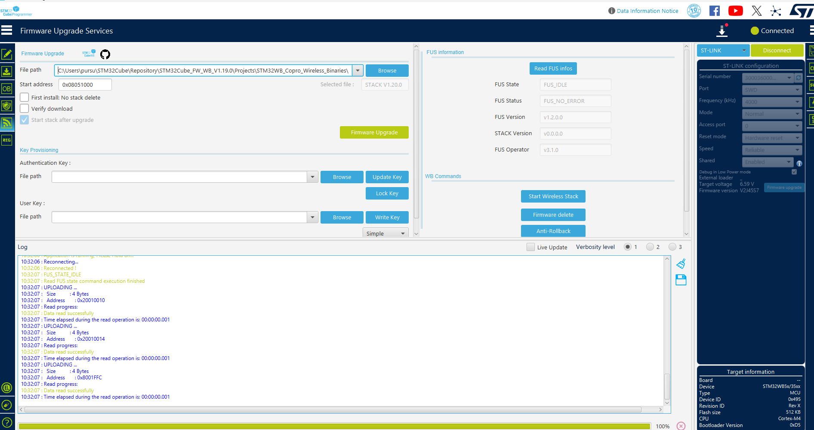

硬件就是玄学。Hardware is a mystery. >_<
Finally, after months of troubleshooting, I found the root cause.
The smart insole system runs on an STM32WB30, a dual-core ARM Cortex-M4 microcontroller. The first version of the self-designed board was working with some simple functions. After adding sequencer with low power management, i made some optimization and have the second version now.
Getting it to talk over BLE took the better part of two months (I admit I was frustrated and afraid there was no board working...), and the symptom kept changing: first nothing advertised at all, then the device appeared in the scanner but would not connect, then it connected and died after exactly five seconds, every time.
It turned out to be three completely independent faults stacked on top of each other, each one sufficient on its own to break Bluetooth. Fixing one only revealed the next. And before any of that, there was a hardware problem that had to be solved with a hot air gun.
---
A transplant, with a hot air gun
Before there was any firmware to debug, there had to be a board that worked.
The PCB house did not stock two of the parts on our BOM. So the boards arrived beautifully assembled, with two conspicuously empty footprints where the important things were supposed to go.
Luckily, I still have two old boards with those two items. Which turned the problem from *procurement* into *surgery*. Harvest, then transplant.
The IMU is a BMI088 in an LGA-16 package. If you have never met one: it is a little black rectangle about the size of a grain of rice, and all sixteen of its pads are underneath it. There is nothing on the sides for a soldering iron to touch. You cannot see the joints while you make them. You cannot see them after you make them either.
So the procedure goes:
- Flux everything. Then flux it again. Flux is not a step, it is a lifestyle >_<.
- Hot air to lift the donor part off the old board, without cooking the four neighbours sitting 2 mm away, which mostly means moving the nozzle in small circles and resisting the urge to turn the temperature up.
- Clean both sets of pads — the part's and the new board's. Old solder has to come off; wick and patience.
- Fresh solder paste on the destination footprint, a thin even film.
- Place the part roughly straight.
- Hot air again, and wait.
All the steps above are what I learned from Bilibili, thank you!!!
Step six is the good part. When the paste goes liquid, surface tension pulls the component into alignment all by itself. The chip visibly *snaps* square onto the footprint. It takes about half a second and it is, I maintain, the single most satisfying moment available in hardware work.
And then, of course, the part where the universe reminds you who is in charge: one of the capacitors on the antenna network got blown clean off the board by the hot air, and I never found it again. Somewhere in 2.85 (our lab).
Then comes the uncomfortable bit: you have no idea whether the joints took. Sixteen of them, all hidden under the part, and no X-ray in the lab. Continuity testing is not an option when there is nothing to probe. The only test that exists is an electrical one, power it up and ask the chip who it is.
Which is why the first two lines of our boot log are the ones I care about most:
`` BMI08 initialization success! Accel chip ID - 0x1e Gyro chip ID - 0xf ``
0x1E and 0x0F are the values straight out of the BMI088 datasheet. Reading them back over SPI means the power pads made contact, the ground pads made contact, and all four SPI lines made contact. A chip ID register is the cheapest and most honest test of a hand-soldered joint you will ever get.
The IMU lived. The board was real.
I hate to say that, but it took me a whole Saturday to fix the first board and make the IMU work. It sucks.
---
Nothing advertises at all
Board alive, firmware flashed, phone in hand. Nothing. No Orteada-03 in the scanner, not in our app, not in ST BLE Toolbox, not in anything.
The only thing I had to go on was the semihosting console, and it said this:
`` BMI08 initialization success! Accel chip ID - 0x1e Gyro chip ID - 0xf Operational mode change request to: 12 ``
And then it stopped. Forever.
Reading a line that isn't there
The interesting thing is not the last line printed. It is the line that should have come next and didn't.
Operational mode change request to: 12 is printed by set_operational_mode(). The matching Operational mode changed to: 12 is printed by apply_operational_mode() — and that function only ever runs when the sequencer task CFG_TASK_OPERATIONAL_MODE is queued.
So I went looking for who queues it. Exactly one place does: inside APP_BLE_Init(). And APP_BLE_Init() is only called from one place, the WIRELESS_FW_RUNNING branch of the CPU2 ready event.
Which means the missing line was not telling me the operational-mode code was broken. It was telling me CPU2 never reported a running BLE stack. The whole application was sitting there waiting for a handshake that never came.
The reason I couldn't see *that* directly is that every message on the CPU2 path is an APP_DBG_MSG(), and the stock ST project ships with CFG_DEBUG_APP_TRACE = 0, which compiles all of them out. The console was silent about the single most important fact in the entire investigation.
So the first useful thing I did was not a fix. It was adding plain printf() along the chain:
`` CPU2 ready → APP_BLE_Init() → SHCI_C2_BLE_Init() → aci_gap_set_discoverable() ``
Two traps here, and I fell into both.
Trap one: newlib buffers semihosting stdout. The log gets truncated at an arbitrary point and looks exactly like a hang. One line fixes it:
``c initialise_monitor_handles(); setvbuf(stdout, NULL, _IONBF, 0); ``
Trap two, the expensive one: a semihosting printf() is a BKPT 0xAB. It halts the core until the debugger services it, for tens to hundreds of milliseconds. I did not understand how much that mattered until much later, it turned out to be half of the final bug.
The irony of "Read FUS infos"
With the traces in, the answer came back immediately: CPU2 was running FUS, not the BLE stack.

Two ways to end up there.
One: a factory-fresh STM32WB ships with FUS only. There is no BLE stack on it at all,you have to flash one. So two brand-new boards behaving identically is completely expected, and not a firmware bug.
Two, and this is the part that still makes me laugh: CubeProgrammer's *Read FUS infos* button switches CPU2 to FUS in order to read it, and never switches it back. FUS then stays active across power cycles. So the very act of checking which stack is installed *breaks the thing you were about to test.*
That is why one board that used to advertise intermittently went permanently quiet in the middle of my investigation. I did it to myself, with a diagnostic.
FUS State = FUS_IDLE with a populated STACK Version means the stack is *installed*. It does not mean it is *executing*.
Fix: Firmware Upgrade Services → Start Wireless Stack, then power-cycle. And press it again after every single "Read FUS infos".
I promise, I haven't met this problem before. I've no idea if there is any update about STM32Programmer......
While I was in there, the stack variant matters too. For a 512 KB WB3x part this project needs stm32wb3x_BLE_Stack_full_extended_fw.bin at 0x08053000 (tick *First install* on a virgin part). The version string does not distinguish the variants, so verify through Option Bytes → SFSA, the secure-flash start address in 4 KB pages:
| SFSA | Install address | Variant |
|---|---|---|
0x53 | 0x08053000 | full_extended — has extended advertising |
0x5C | 0x0805C000 | full — no extended advertising |
I needed full_extended because CFG_BLE_OPTIONS sets SHCI_C2_BLE_INIT_OPTIONS_EXT_ADV, and the broadcaster mode uses CFG_BLE_MAX_ADV_DATA_LEN = 1650 — far beyond the 31 bytes a legacy advertisement can carry.
---
Stack running. Still nothing advertises.
This is the moment I expected to be done. I was not.
There were four separate defects in the application layer, and the cruel part is that fixing any one of them alone changes nothing at all. That is exactly why they had survived so long: every individual fix looked like it had failed.
(a) The boot mode has BLE switched off, and there is no way out of it.
``c case OP_MODE_TESTING: // the mode entered at boot configure_ble(&op_mode_conf->ble_conf, OP_BLE_DISABLE, // ← BLE off GAP_PERIPHERAL_ROLE, 1); ``
and update_operational_mode() has no case OP_MODE_TESTING, so it falls straight through to default. The device can never transition out. BLE is off forever.
(b) Fix (a), and the advertising branch is still unreachable.
``c ble_activity_t prev_enable = OP_BLE_ENABLE; // ← initial value ... if ((ble_conf->enable == OP_BLE_ENABLE) && ((prev_enable == OP_BLE_DISABLE) || (ble_conf->GAP_role != prev_GAP_role))) { Adv_Request(APP_BLE_FAST_ADV); // never reached on the first call } ``
At boot prev_enable is already OP_BLE_ENABLE and the role hasn't changed, so neither disjunct holds. Initialising it to OP_BLE_DISABLE makes the first call take the branch.
(c) Fix (a) and (b), and the board hangs. That branch called APP_BLE_Init(), which issues a second SHCI_C2_BLE_Init() — the first already ran when CPU2 signalled ready. CPU2 accepts it once per reset. The second returns an error, and the stock error path is
``c void Error_Handler(void) { __disable_irq(); while (1) {} } ``
with no watchdog enabled anywhere in the project. One transient failure and the board is dead until somebody pulls the power. There is no log, no LED, nothing.
(d) disable_ble() was destroying the GATT database. It called hci_reset(), which wipes the GATT database and the GAP configuration, but nothing rebuilds them, because Ble_Hci_Gap_Gatt_Init(), SVCCTL_Init() and Custom_APP_Init() only run inside APP_BLE_Init(). So after one single mode switch the device would still advertise while exposing no services at all. It also gated the IPCC clock off, which breaks every later HCI command.
---
It advertises. It just refuses to stay.
One board came back to life. The other did not. It advertised, could be seen, but would not connect, and after a while disappeared from the scanner entirely.
And this is where I spent the most time going in completely the wrong direction.
Wrong turn 1: low power
My first theory was Stop mode. It fit beautifully: advertising has loose timing requirements and survives a sloppy sleep clock, while a connection needs precise anchor points. Board-specific behaviour pointed at a marginal 32.768 kHz crystal. Perfect story.
So I set CFG_LPM_SUPPORTED = 0 and rebuilt. No change.
The tempting conclusion is "low power is not involved." That is wrong, and I want to be precise about why: CFG_LPM_SUPPORTED only controls whether CPU1 enters Stop mode. CPU2 sleeps between radio events regardless, and always uses the configured low-speed clock. The test eliminated one specific mechanism. It did not eliminate the category. Being clear about what a negative result actually excludes turned out to matter a lot.
Wrong turn 2: "Debug works, Release doesn't"
The next framing was the build configuration, because Debug printed a perfect boot log and Release misbehaved. The two configurations really are different programs. Debug is -O0 with --specs=rdimon.specs (semihosting printf works, and the image HardFaults without a debugger attached); Release is -Os with --specs=nosys.specs, where every printf compiles down to nothing. So -Os exposing a missing volatile was a genuinely plausible theory, and the application layer has no volatile anywhere.
I chased that for a while.
The dumb question that dissolved everything
Then I asked something almost embarrassingly basic: had a connection ever actually succeeded in Debug?
It had not. Nobody had tried. "Debug works" had always meant "the boot log looks right." No board had ever connected, in any build.
So Debug-versus-Release was never the variable. It was never even a variable. Two weeks of framing evaporated in one sentence, and the real question finally came into focus: *why does this firmware refuse connections on every board, in every build?*
---
Exactly five seconds
At this point I stopped theorising and went to get the phone's side of the story. adb logcat, connect, capture.
Full Android logcat capture
2026-09-23 11:25:55.653 17068-17068 BLE com.example.orteada I New device found: Orteada-03 - 00:80:E1:27:E4:1E - true 2026-09-23 11:25:55.732 17068-17068 BLE com.example.orteada I New device found: DESKTOP-GS0D6RR - 55:A3:89:1C:84:4F - true 2026-09-23 11:25:55.851 2030-4964 Compatibil...geReporter system_server D Compat change id reported: 135634846; UID 10114; state: DISABLED 2026-09-23 11:25:55.851 2030-4964 Compatibil...geReporter system_server D Compat change id reported: 177438394; UID 10114; state: DISABLED 2026-09-23 11:25:55.851 2030-4964 Compatibil...geReporter system_server D Compat change id reported: 135772972; UID 10114; state: DISABLED 2026-09-23 11:25:55.852 2030-4964 Compatibil...geReporter system_server D Compat change id reported: 135754954; UID 10114; state: ENABLED 2026-09-23 11:25:55.852 2030-2108 Compatibil...geReporter system_server D Compat change id reported: 143937733; UID 10114; state: ENABLED 2026-09-23 11:25:55.881 2030-4964 Compatibil...geReporter system_server D Compat change id reported: 168419799; UID 10114; state: DISABLED 2026-09-23 11:25:55.892 17420-17420 Compatibil...geReporter com.android.htmlviewer D Compat change id reported: 171979766; UID 10114; state: ENABLED 2026-09-23 11:25:56.841 3468-4224 BtGatt.ScanManager com.android.bluetooth I msg.what = MSG_STOP_BLE_SCAN, msg.arg1 = None 2026-09-23 11:25:56.843 17068-17068 BLE com.example.orteada I Scan stopped 2026-09-23 11:25:56.846 17068-17068 BLE com.example.orteada D Stopping Ble scan 2026-09-23 11:25:57.116 6596-7251 lyra-conn-agent com.xiaomi.mi_connect_service I PhysConnTransAgent::OnLinkClientConnected:431 server:id:1, status:created, link_type=BleGattServer, link_id=10f, trans_type:ble, trans_addr:[type=BLE,mac=,uuid=*fcc0*34fb], trans_id=1, receive a new link client:[link_type=BleGattClient 8, link_id=0x1f10, server_mac=, client_mac=00:::::1E, uuid=*fcc0*34fb, handle=47] 2026-09-23 11:25:57.125 17068-17084 BLE com.example.orteada I onConnectionStateChange status=0 newState=2 2026-09-23 11:25:57.125 17068-17084 BLE com.example.orteada I Connected to GATT server. 2026-09-23 11:25:57.130 17068-17084 BLE com.example.orteada I GATT cache refresh requested: true 2026-09-23 11:25:57.130 17068-17084 BLE com.example.orteada D MTU size changed to 156 2026-09-23 11:25:57.134 17068-17084 BLE com.example.orteada I Starting service discovery: true 2026-09-23 11:25:57.143 17068-17068 BLE com.example.orteada D Stopping Ble scan 2026-09-23 11:25:57.146 2030-2030 SettingsProvider system_server W Failed to notify for 999: content://settings/global/RECORD_BLE_APPNAME java.lang.SecurityException: Failed to find provider settings for user 999; expected to find a valid ContentProvider for this authority at com.android.server.content.ContentService.notifyChange(ContentService.java:451) at android.content.ContentResolver.notifyChange(ContentResolver.java:2916) at android.content.ContentResolver.notifyChange(ContentResolver.java:2905) at android.content.ContentResolver.notifyChange(ContentResolver.java:2899) at com.android.providers.settings.SettingsProvider$SettingsRegistry$MyHandler.handleMessage(SettingsProvider.java:3713) at android.os.Handler.dispatchMessage(Handler.java:106) at android.os.Looper.loopOnce(Looper.java:211) at android.os.Looper.loop(Looper.java:300) at com.android.server.SystemServer.run(SystemServer.java:1033) at com.android.server.SystemServer.main(SystemServer.java:711) at java.lang.reflect.Method.invoke(Native Method) at com.android.internal.os.RuntimeInit$MethodAndArgsCaller.run(RuntimeInit.java:561) at com.android.internal.os.ZygoteInit.main(ZygoteInit.java:932) 2026-09-23 11:25:57.150 2030-2107 Compatibil...geReporter system_server D Compat change id reported: 135634846; UID 1001; state: DISABLED 2026-09-23 11:25:57.150 2030-2107 Compatibil...geReporter system_server D Compat change id reported: 177438394; UID 1001; state: DISABLED 2026-09-23 11:25:57.150 2030-2107 Compatibil...geReporter system_server D Compat change id reported: 135772972; UID 1001; state: DISABLED 2026-09-23 11:25:57.150 2030-2107 Compatibil...geReporter system_server D Compat change id reported: 135754954; UID 1001; state: ENABLED 2026-09-23 11:25:57.159 2030-2107 Compatibil...geReporter system_server D Compat change id reported: 135634846; UID 10155; state: DISABLED 2026-09-23 11:25:57.159 2030-2107 Compatibil...geReporter system_server D Compat change id reported: 177438394; UID 10155; state: DISABLED 2026-09-23 11:25:57.159 2030-2107 Compatibil...geReporter system_server D Compat change id reported: 135772972; UID 10155; state: DISABLED 2026-09-23 11:25:57.159 2030-2107 Compatibil...geReporter system_server D Compat change id reported: 135754954; UID 10155; state: ENABLED 2026-09-23 11:25:57.160 2030-2108 Compatibil...geReporter system_server D Compat change id reported: 143937733; UID 10155; state: ENABLED 2026-09-23 11:25:57.164 2030-2107 Compatibil...geReporter system_server D Compat change id reported: 135634846; UID 1027; state: DISABLED 2026-09-23 11:25:57.164 2030-2107 Compatibil...geReporter system_server D Compat change id reported: 177438394; UID 1027; state: DISABLED 2026-09-23 11:25:57.164 2030-2107 Compatibil...geReporter system_server D Compat change id reported: 135772972; UID 1027; state: DISABLED 2026-09-23 11:25:57.165 2030-2107 Compatibil...geReporter system_server D Compat change id reported: 135754954; UID 1027; state: ENABLED 2026-09-23 11:25:57.167 2030-2107 Compatibil...geReporter system_server D Compat change id reported: 135634846; UID 10420; state: DISABLED 2026-09-23 11:25:57.167 2030-2107 Compatibil...geReporter system_server D Compat change id reported: 177438394; UID 10420; state: DISABLED 2026-09-23 11:25:57.167 2030-2107 Compatibil...geReporter system_server D Compat change id reported: 135772972; UID 10420; state: DISABLED 2026-09-23 11:25:57.168 2030-2107 Compatibil...geReporter system_server D Compat change id reported: 135754954; UID 10420; state: ENABLED 2026-09-23 11:25:57.170 2030-2107 Compatibil...geReporter system_server D Compat change id reported: 135634846; UID 10101; state: DISABLED 2026-09-23 11:25:57.170 2030-2107 Compatibil...geReporter system_server D Compat change id reported: 177438394; UID 10101; state: DISABLED 2026-09-23 11:25:57.170 2030-2107 Compatibil...geReporter system_server D Compat change id reported: 135772972; UID 10101; state: DISABLED 2026-09-23 11:25:57.170 2030-2107 Compatibil...geReporter system_server D Compat change id reported: 135754954; UID 10101; state: ENABLED 2026-09-23 11:25:57.177 2030-2107 Compatibil...geReporter system_server D Compat change id reported: 135634846; UID 10219; state: DISABLED 2026-09-23 11:25:57.177 2030-2107 Compatibil...geReporter system_server D Compat change id reported: 177438394; UID 10219; state: DISABLED 2026-09-23 11:25:57.177 2030-2107 Compatibil...geReporter system_server D Compat change id reported: 135772972; UID 10219; state: DISABLED 2026-09-23 11:25:57.177 2030-2107 Compatibil...geReporter system_server D Compat change id reported: 135754954; UID 10219; state: ENABLED 2026-09-23 11:25:57.182 2030-2108 Compatibil...geReporter system_server D Compat change id reported: 143937733; UID 10420; state: ENABLED 2026-09-23 11:25:57.199 2030-2108 Compatibil...geReporter system_server D Compat change id reported: 143937733; UID 10101; state: ENABLED 2026-09-23 11:25:57.202 2030-6464 Compatibil...geReporter system_server D Compat change id reported: 168419799; UID 10155; state: DISABLED 2026-09-23 11:25:57.213 17447-17447 Compatibil...geReporter com.miui.misound D Compat change id reported: 171979766; UID 10155; state: ENABLED 2026-09-23 11:25:57.215 17445-17445 Compatibil...geReporter com.qualcomm.qti.autoregistration D Compat change id reported: 171979766; UID 1001; state: ENABLED 2026-09-23 11:25:57.221 2030-2108 Compatibil...geReporter system_server D Compat change id reported: 143937733; UID 10219; state: ENABLED 2026-09-23 11:25:57.247 17471-17471 Compatibil...geReporter com.whatsapp D Compat change id reported: 171979766; UID 10420; state: ENABLED 2026-09-23 11:25:57.262 17454-17454 Compatibil...geReporter com.miui.tsmclient D Compat change id reported: 171979766; UID 1027; state: ENABLED 2026-09-23 11:25:57.276 17510-17510 Compatibil...geReporter com.google.android.ext.services D Compat change id reported: 171979766; UID 10219; state: ENABLED 2026-09-23 11:25:57.286 2030-6413 Compatibil...geReporter system_server D Compat change id reported: 161145287; UID 1001; state: DISABLED 2026-09-23 11:25:57.295 17496-17496 Compatibil...geReporter com.android.mms D Compat change id reported: 171979766; UID 10101; state: ENABLED 2026-09-23 11:25:57.297 17445-17445 Compatibil...geReporter com.qualcomm.qti.autoregistration D Compat change id reported: 160794467; UID 1001; state: ENABLED 2026-09-23 11:25:57.360 2030-3719 Compatibil...geReporter system_server D Compat change id reported: 161145287; UID 10219; state: DISABLED 2026-09-23 11:25:57.374 17510-17572 Compatibil...geReporter com.google.android.ext.services D Compat change id reported: 160794467; UID 10219; state: ENABLED 2026-09-23 11:25:57.390 17510-17582 Compatibil...geReporter com.google.android.ext.services D Compat change id reported: 194532703; UID 10219; state: ENABLED 2026-09-23 11:25:57.390 2030-5389 Compatibil...geReporter system_server D Compat change id reported: 194532703; UID 10219; state: ENABLED 2026-09-23 11:25:57.391 2030-6413 Compatibil...geReporter system_server D Compat change id reported: 161145287; UID 1027; state: DISABLED 2026-09-23 11:25:57.393 17454-17573 Compatibil...geReporter com.miui.tsmclient D Compat change id reported: 160794467; UID 1027; state: ENABLED 2026-09-23 11:25:57.472 17471-17471 Compatibil...geReporter com.whatsapp D Compat change id reported: 183155436; UID 10420; state: ENABLED 2026-09-23 11:25:57.519 17454-17641 XMPush-17454 com.miui.tsmclient V [Tid:233] ASSEMBLE_PUSH : assemble push register 2026-09-23 11:25:57.558 17496-17496 Compatibil...geReporter com.android.mms D Compat change id reported: 183155436; UID 10101; state: ENABLED 2026-09-23 11:25:57.559 2030-5352 Compatibil...geReporter system_server D Compat change id reported: 161145287; UID 10101; state: DISABLED 2026-09-23 11:25:58.074 2030-6470 Compatibil...geReporter system_server D Compat change id reported: 161145287; UID 10420; state: DISABLED 2026-09-23 11:25:58.101 2030-5389 Compatibil...geReporter system_server D Compat change id reported: 168419799; UID 10130; state: DISABLED 2026-09-23 11:25:58.137 17471-17805 Compatibil...geReporter com.whatsapp D Compat change id reported: 160794467; UID 10420; state: ENABLED 2026-09-23 11:25:58.389 2030-2684 Compatibil...geReporter system_server D Compat change id reported: 218533173; UID 10219; state: ENABLED 2026-09-23 11:25:58.428 2030-2030 Compatibil...geReporter system_server D Compat change id reported: 135634846; UID 10185; state: DISABLED 2026-09-23 11:25:58.428 2030-2030 Compatibil...geReporter system_server D Compat change id reported: 177438394; UID 10185; state: DISABLED 2026-09-23 11:25:58.428 2030-2030 Compatibil...geReporter system_server D Compat change id reported: 135772972; UID 10185; state: DISABLED 2026-09-23 11:25:58.428 2030-2030 Compatibil...geReporter system_server D Compat change id reported: 135754954; UID 10185; state: ENABLED 2026-09-23 11:25:58.428 2030-2108 Compatibil...geReporter system_server D Compat change id reported: 143937733; UID 10185; state: ENABLED 2026-09-23 11:25:58.464 17854-17854 Compatibil...geReporter com.android.vending D Compat change id reported: 171979766; UID 10185; state: ENABLED 2026-09-23 11:25:58.527 2030-2088 Compatibil...geReporter system_server D Compat change id reported: 135634846; UID 10223; state: DISABLED 2026-09-23 11:25:58.527 2030-2088 Compatibil...geReporter system_server D Compat change id reported: 177438394; UID 10223; state: DISABLED 2026-09-23 11:25:58.527 2030-2088 Compatibil...geReporter system_server D Compat change id reported: 135772972; UID 10223; state: DISABLED 2026-09-23 11:25:58.528 2030-2088 Compatibil...geReporter system_server D Compat change id reported: 135754954; UID 10223; state: ENABLED 2026-09-23 11:25:58.528 2030-2108 Compatibil...geReporter system_server D Compat change id reported: 143937733; UID 10223; state: ENABLED 2026-09-23 11:25:58.533 2030-6413 Compatibil...geReporter system_server D Compat change id reported: 135634846; UID 10186; state: DISABLED 2026-09-23 11:25:58.533 2030-6413 Compatibil...geReporter system_server D Compat change id reported: 177438394; UID 10186; state: DISABLED 2026-09-23 11:25:58.533 2030-6413 Compatibil...geReporter system_server D Compat change id reported: 135772972; UID 10186; state: DISABLED 2026-09-23 11:25:58.533 2030-6413 Compatibil...geReporter system_server D Compat change id reported: 135754954; UID 10186; state: ENABLED 2026-09-23 11:25:58.535 2030-2108 Compatibil...geReporter system_server D Compat change id reported: 143937733; UID 10186; state: ENABLED 2026-09-23 11:25:58.568 17885-17885 Compatibil...geReporter com.android.permissioncontroller D Compat change id reported: 171979766; UID 10223; state: ENABLED 2026-09-23 11:25:58.606 17887-17887 Compatibil...geReporter com.google.process.gservices D Compat change id reported: 171979766; UID 10186; state: ENABLED 2026-09-23 11:25:58.619 2030-3719 Compatibil...geReporter system_server D Compat change id reported: 161145287; UID 10223; state: DISABLED 2026-09-23 11:25:58.734 2030-6413 Compatibil...geReporter system_server D Compat change id reported: 171306433; UID 10420; state: ENABLED 2026-09-23 11:25:58.747 2030-6464 Compatibil...geReporter system_server D Compat change id reported: 218533173; UID 10420; state: ENABLED 2026-09-23 11:25:58.747 2030-6464 Compatibil...geReporter system_server D Compat change id reported: 226439802; UID 10420; state: DISABLED 2026-09-23 11:25:58.794 3468-4224 BtGatt.ScanManager com.android.bluetooth I msg.what = MSG_STOP_BLE_SCAN, msg.arg1 = None 2026-09-23 11:25:58.796 17471-17799 Compatibil...geReporter com.whatsapp D Compat change id reported: 194532703; UID 10420; state: ENABLED 2026-09-23 11:25:58.797 2030-6470 Compatibil...geReporter system_server D Compat change id reported: 194532703; UID 10420; state: ENABLED 2026-09-23 11:25:58.818 2030-6464 Compatibil...geReporter system_server D Compat change id reported: 161145287; UID 10185; state: DISABLED 2026-09-23 11:25:58.834 17854-17884 Compatibil...geReporter com.android.vending D Compat change id reported: 183155436; UID 10185; state: ENABLED 2026-09-23 11:25:58.895 2030-6470 Compatibil...geReporter system_server D Compat change id reported: 135634846; UID 10186; state: DISABLED 2026-09-23 11:25:58.895 2030-6470 Compatibil...geReporter system_server D Compat change id reported: 177438394; UID 10186; state: DISABLED 2026-09-23 11:25:58.895 2030-6470 Compatibil...geReporter system_server D Compat change id reported: 135772972; UID 10186; state: DISABLED 2026-09-23 11:25:58.895 2030-6470 Compatibil...geReporter system_server D Compat change id reported: 135754954; UID 10186; state: ENABLED 2026-09-23 11:25:58.895 2030-2108 Compatibil...geReporter system_server D Compat change id reported: 143937733; UID 10186; state: ENABLED 2026-09-23 11:25:58.963 18138-18138 Compatibil...geReporter com.google.process.gapps D Compat change id reported: 171979766; UID 10186; state: ENABLED 2026-09-23 11:25:59.000 2030-6470 Compatibil...geReporter system_server D Compat change id reported: 168419799; UID 10186; state: DISABLED 2026-09-23 11:25:59.038 2030-5389 Compatibil...geReporter system_server D Compat change id reported: 161252188; UID 10186; state: DISABLED 2026-09-23 11:25:59.130 2030-2107 BroadcastQueue system_server W Background execution not allowed: receiving Intent { act=android.search.action.SEARCHABLES_CHANGED flg=0x24000010 } to com.android.quicksearchbox/.search.collections.CorporaUpdateReceiver 2026-09-23 11:25:59.143 2030-6470 Compatibil...geReporter system_server D Compat change id reported: 161145287; UID 10186; state: DISABLED 2026-09-23 11:25:59.164 2030-6464 Compatibil...geReporter system_server D Compat change id reported: 201794303; UID 10186; state: ENABLED 2026-09-23 11:25:59.274 17854-18109 Compatibil...geReporter com.android.vending D Compat change id reported: 194532703; UID 10185; state: ENABLED 2026-09-23 11:25:59.275 2030-3719 Compatibil...geReporter system_server D Compat change id reported: 194532703; UID 10185; state: ENABLED 2026-09-23 11:25:59.295 5023-5122 MiuiFastConnectService com.xiaomi.bluetooth D handleMessage: MSG_START_BLE_SCAN mode: 0 2026-09-23 11:25:59.302 3468-4224 BtGatt.ScanManager com.android.bluetooth I msg.what = MSG_START_BLE_SCAN, msg.arg1 = None 2026-09-23 11:25:59.450 2030-6413 Compatibil...geReporter system_server D Compat change id reported: 135634846; UID 10185; state: DISABLED 2026-09-23 11:25:59.450 2030-6413 Compatibil...geReporter system_server D Compat change id reported: 177438394; UID 10185; state: DISABLED 2026-09-23 11:25:59.450 2030-6413 Compatibil...geReporter system_server D Compat change id reported: 135772972; UID 10185; state: DISABLED 2026-09-23 11:25:59.450 2030-6413 Compatibil...geReporter system_server D Compat change id reported: 135754954; UID 10185; state: ENABLED 2026-09-23 11:25:59.451 2030-2108 Compatibil...geReporter system_server D Compat change id reported: 143937733; UID 10185; state: ENABLED 2026-09-23 11:25:59.487 18246-18246 Compatibil...geReporter com.android.vending D Compat change id reported: 171979766; UID 10185; state: ENABLED 2026-09-23 11:25:59.769 18246-18246 Compatibil...geReporter com.android.vending D Compat change id reported: 183155436; UID 10185; state: ENABLED 2026-09-23 11:26:00.024 2030-5389 Compatibil...geReporter system_server D Compat change id reported: 168419799; UID 10185; state: DISABLED 2026-09-23 11:26:00.114 17496-17743 Compatibil...geReporter com.android.mms D Compat change id reported: 194532703; UID 10101; state: ENABLED 2026-09-23 11:26:00.115 2030-3719 Compatibil...geReporter system_server D Compat change id reported: 194532703; UID 10101; state: ENABLED 2026-09-23 11:26:00.224 2030-6470 Compatibil...geReporter system_server D Compat change id reported: 168419799; UID 10101; state: DISABLED 2026-09-23 11:26:00.234 2030-6470 Compatibil...geReporter system_server D Compat change id reported: 197654537; UID 10475; state: ENABLED 2026-09-23 11:26:00.249 17496-18357 XMPush-17496 com.android.mms V [Tid:264] ASSEMBLE_PUSH : assemble push register 2026-09-23 11:26:00.515 2030-3719 Compatibil...geReporter system_server D Compat change id reported: 201794303; UID 10420; state: ENABLED 2026-09-23 11:26:00.652 3468-4224 BtGatt.ScanManager com.android.bluetooth I msg.what = MSG_START_BLE_SCAN, msg.arg1 = None 2026-09-23 11:26:00.710 17471-18031 Compatibil...geReporter com.whatsapp D Compat change id reported: 147600208; UID 10420; state: ENABLED 2026-09-23 11:26:00.711 2030-6417 Compatibil...geReporter system_server D Compat change id reported: 157233955; UID 10420; state: ENABLED 2026-09-23 11:26:01.292 2030-16533 Compatibil...geReporter system_server D Compat change id reported: 168419799; UID 1001; state: DISABLED 2026-09-23 11:26:01.305 17068-17068 BLE com.example.orteada I New device found: DESKTOP-GS0D6RR - 55:A3:89:1C:84:4F - true 2026-09-23 11:26:01.501 17068-17068 BLE com.example.orteada I New device found: P8b - F3:29:C3:66:58:C2 - true 2026-09-23 11:26:02.173 17068-17383 BLE com.example.orteada I onConnectionStateChange status=8 newState=0 2026-09-23 11:26:02.179 2030-2030 SettingsProvider system_server W Failed to notify for 999: content://settings/global/RECORD_BLE_APPNAME java.lang.SecurityException: Failed to find provider settings for user 999; expected to find a valid ContentProvider for this authority at com.android.server.content.ContentService.notifyChange(ContentService.java:451) at android.content.ContentResolver.notifyChange(ContentResolver.java:2916) at android.content.ContentResolver.notifyChange(ContentResolver.java:2905) at android.content.ContentResolver.notifyChange(ContentResolver.java:2899) at com.android.providers.settings.SettingsProvider$SettingsRegistry$MyHandler.handleMessage(SettingsProvider.java:3713) at android.os.Handler.dispatchMessage(Handler.java:106) at android.os.Looper.loopOnce(Looper.java:211) at android.os.Looper.loop(Looper.java:300) at com.android.server.SystemServer.run(SystemServer.java:1033) at com.android.server.SystemServer.main(SystemServer.java:711) at java.lang.reflect.Method.invoke(Native Method) at com.android.internal.os.RuntimeInit$MethodAndArgsCaller.run(RuntimeInit.java:561) at com.android.internal.os.ZygoteInit.main(ZygoteInit.java:932) 2026-09-23 11:26:02.179 5023-5023 MiuiBleAppReceiver com.xiaomi.bluetooth D action: android.bluetooth.ble.BLE_DEVICE_DISCONNECTED new state: 10 2026-09-23 11:26:02.181 17068-17383 BLE com.example.orteada I Disconnected from device: Orteada-03 (cached system name: Orteada-03), status=8 2026-09-23 11:26:02.186 17068-17068 BLE com.example.orteada D Starting Ble scan 2026-09-23 11:26:02.319 17068-17068 BLE com.example.orteada I New device found: Orteada-03 - 00:80:E1:27:E4:1E - true 2026-09-23 11:26:02.325 3468-4224 BtGatt.ScanManager com.android.bluetooth I msg.what = MSG_STOP_BLE_SCAN, msg.arg1 = None 2026-09-23 11:26:02.330 17068-17068 BLE com.example.orteada I Scan stopped 2026-09-23 11:26:02.334 17068-17068 BLE com.example.orteada D Stopping Ble scan 2026-09-23 11:26:02.517 6596-7251 lyra-conn-agent com.xiaomi.mi_connect_service I PhysConnTransAgent::OnLinkClientConnected:431 server:id:1, status:created, link_type=BleGattServer, link_id=10f, trans_type:ble, trans_addr:[type=BLE,mac=,uuid=*fcc0*34fb], trans_id=1, receive a new link client:[link_type=BleGattClient 8, link_id=0x2010, server_mac=, client_mac=00:::::1E, uuid=*fcc0*34fb, handle=48] 2026-09-23 11:26:02.522 17068-17084 BLE com.example.orteada I onConnectionStateChange status=0 newState=2 2026-09-23 11:26:02.523 17068-17084 BLE com.example.orteada I Connected to GATT server. 2026-09-23 11:26:02.530 17068-17084 BLE com.example.orteada I GATT cache refresh requested: true 2026-09-23 11:26:02.531 17068-17084 BLE com.example.orteada D MTU size changed to 156 2026-09-23 11:26:02.533 17068-17084 BLE com.example.orteada I Starting service discovery: true 2026-09-23 11:26:02.535 2030-2030 SettingsProvider system_server W Failed to notify for 999: content://settings/global/RECORD_BLE_APPNAME java.lang.SecurityException: Failed to find provider settings for user 999; expected to find a valid ContentProvider for this authority at com.android.server.content.ContentService.notifyChange(ContentService.java:451) at android.content.ContentResolver.notifyChange(ContentResolver.java:2916) at android.content.ContentResolver.notifyChange(ContentResolver.java:2905) at android.content.ContentResolver.notifyChange(ContentResolver.java:2899) at com.android.providers.settings.SettingsProvider$SettingsRegistry$MyHandler.handleMessage(SettingsProvider.java:3713) at android.os.Handler.dispatchMessage(Handler.java:106) at android.os.Looper.loopOnce(Looper.java:211) at android.os.Looper.loop(Looper.java:300) at com.android.server.SystemServer.run(SystemServer.java:1033) at com.android.server.SystemServer.main(SystemServer.java:711) at java.lang.reflect.Method.invoke(Native Method) at com.android.internal.os.RuntimeInit$MethodAndArgsCaller.run(RuntimeInit.java:561) at com.android.internal.os.ZygoteInit.main(ZygoteInit.java:932) 2026-09-23 11:26:02.537 17068-17068 BLE com.example.orteada D Stopping Ble scan 2026-09-23 11:26:04.298 2030-2030 Compatibil...geReporter system_server D Compat change id reported: 135634846; UID 10129; state: DISABLED 2026-09-23 11:26:04.298 2030-2030 Compatibil...geReporter system_server D Compat change id reported: 177438394; UID 10129; state: DISABLED 2026-09-23 11:26:04.299 2030-2030 Compatibil...geReporter system_server D Compat change id reported: 135772972; UID 10129; state: DISABLED 2026-09-23 11:26:04.299 2030-2030 Compatibil...geReporter system_server D Compat change id reported: 135754954; UID 10129; state: ENABLED 2026-09-23 11:26:04.300 2030-2108 Compatibil...geReporter system_server D Compat change id reported: 143937733; UID 10129; state: ENABLED 2026-09-23 11:26:04.341 2030-5352 Compatibil...geReporter system_server D Compat change id reported: 181136395; UID 10475; state: DISABLED 2026-09-23 11:26:04.341 2030-5352 Compatibil...geReporter system_server D Compat change id reported: 174042936; UID 10475; state: DISABLED 2026-09-23 11:26:04.344 18418-18418 Compatibil...geReporter com.miui.systemAdSolution D Compat change id reported: 171979766; UID 10129; state: ENABLED 2026-09-23 11:26:04.382 2030-3739 Compatibil...geReporter system_server D Compat change id reported: 161145287; UID 10129; state: DISABLED 2026-09-23 11:26:05.894 18418-18446 Compatibil...geReporter com.miui.systemAdSolution D Compat change id reported: 160794467; UID 10129; state: ENABLED 2026-09-23 11:26:07.567 17068-17084 BLE com.example.orteada I onConnectionStateChange status=8 newState=0 2026-09-23 11:26:07.574 5023-5023 MiuiBleAppReceiver com.xiaomi.bluetooth D action: android.bluetooth.ble.BLE_DEVICE_DISCONNECTED new state: 10 2026-09-23 11:26:07.574 2030-2030 SettingsProvider system_server W Failed to notify for 999: content://settings/global/RECORD_BLE_APPNAME java.lang.SecurityException: Failed to find provider settings for user 999; expected to find a valid ContentProvider for this authority at com.android.server.content.ContentService.notifyChange(ContentService.java:451) at android.content.ContentResolver.notifyChange(ContentResolver.java:2916) at android.content.ContentResolver.notifyChange(ContentResolver.java:2905) at android.content.ContentResolver.notifyChange(ContentResolver.java:2899) at com.android.providers.settings.SettingsProvider$SettingsRegistry$MyHandler.handleMessage(SettingsProvider.java:3713) at android.os.Handler.dispatchMessage(Handler.java:106) at android.os.Looper.loopOnce(Looper.java:211) at android.os.Looper.loop(Looper.java:300) at com.android.server.SystemServer.run(SystemServer.java:1033) at com.android.server.SystemServer.main(SystemServer.java:711) at java.lang.reflect.Method.invoke(Native Method) at com.android.internal.os.RuntimeInit$MethodAndArgsCaller.run(RuntimeInit.java:561) at com.android.internal.os.ZygoteInit.main(ZygoteInit.java:932) 2026-09-23 11:26:07.582 17068-17084 BLE com.example.orteada I Disconnected from device: Orteada-03 (cached system name: Orteada-03), status=8 2026-09-23 11:26:07.595 17068-17068 BLE com.example.orteada D Starting Ble scan 2026-09-23 11:26:07.908 2030-5352 Compatibil...geReporter system_server D Compat change id reported: 171306433; UID 1000; state: ENABLED 2026-09-23 11:26:07.908 2030-5352 Compatibil...geReporter system_server D Compat change id reported: 218533173; UID 1000; state: ENABLED 2026-09-23 11:26:09.050 2030-3739 Compatibil...geReporter system_server D Compat change id reported: 161145287; UID 10185; state: DISABLED 2026-09-23 11:26:09.064 17854-18500 PhenotypeCombinedFlags com.android.vending E Config package com.google.android.gms.phenotype cannot use PROCESS_STABLE backing without declarative registration. See go/phenotype-android-integration#phenotype for more information. This will lead to stale flags. 2026-09-23 11:26:09.065 17854-18500 PhenotypeCombinedFlags com.android.vending E Config package com.google.android.gms.phenotype cannot use PROCESS_STABLE backing without declarative registration. See go/phenotype-android-integration#phenotype for more information. This will lead to stale flags. 2026-09-23 11:26:09.079 17854-18500 PhenotypeCombinedFlags com.android.vending E Config package com.google.android.gms.phenotype cannot use PROCESS_STABLE backing without declarative registration. See go/phenotype-android-integration#phenotype for more information. This will lead to stale flags. 2026-09-23 11:26:09.080 17854-18500 PhenotypeCombinedFlags com.android.vending E Config package com.google.android.gms.phenotype cannot use PROCESS_STABLE backing without declarative registration. See go/phenotype-android-integration#phenotype for more information. This will lead to stale flags. 2026-09-23 11:26:09.084 17854-18500 PhenotypeCombinedFlags com.android.vending E Config package com.google.android.gms.phenotype cannot use PROCESS_STABLE backing without declarative registration. See go/phenotype-android-integration#phenotype for more information. This will lead to stale flags. 2026-09-23 11:26:09.101 17854-18500 PhenotypeCombinedFlags com.android.vending E Config package com.google.android.gms.phenotype cannot use PROCESS_STABLE backing without declarative registration. See go/phenotype-android-integration#phenotype for more information. This will lead to stale flags. 2026-09-23 11:26:09.102 17854-18500 PhenotypeCombinedFlags com.android.vending E Config package com.google.android.gms.phenotype cannot use PROCESS_STABLE backing without declarative registration. See go/phenotype-android-integration#phenotype for more information. This will lead to stale flags. 2026-09-23 11:26:09.103 17854-18500 PhenotypeCombinedFlags com.android.vending E Config package com.google.android.gms.phenotype cannot use PROCESS_STABLE backing without declarative registration. See go/phenotype-android-integration#phenotype for more information. This will lead to stale flags. 2026-09-23 11:26:09.103 17854-18500 PhenotypeCombinedFlags com.android.vending E Config package com.google.android.gms.phenotype cannot use PROCESS_STABLE backing without declarative registration. See go/phenotype-android-integration#phenotype for more information. This will lead to stale flags. 2026-09-23 11:26:09.103 17854-18500 PhenotypeCombinedFlags com.android.vending E Config package com.google.android.gms.phenotype cannot use PROCESS_STABLE backing without declarative registration. See go/phenotype-android-integration#phenotype for more information. This will lead to stale flags. 2026-09-23 11:26:09.180 17854-18500 PhenotypeCombinedFlags com.android.vending E Config package com.google.android.gms.phenotype cannot use PROCESS_STABLE backing without declarative registration. See go/phenotype-android-integration#phenotype for more information. This will lead to stale flags. 2026-09-23 11:26:09.184 17854-18500 PhenotypeCombinedFlags com.android.vending E Config package com.google.android.gms.phenotype cannot use PROCESS_STABLE backing without declarative registration. See go/phenotype-android-integration#phenotype for more information. This will lead to stale flags. 2026-09-23 11:26:09.184 17854-18500 PhenotypeCombinedFlags com.android.vending E Config package com.google.android.gms.phenotype cannot use PROCESS_STABLE backing without declarative registration. See go/phenotype-android-integration#phenotype for more information. This will lead to stale flags. 2026-09-23 11:26:09.185 17854-18500 PhenotypeCombinedFlags com.android.vending E Config package com.google.android.gms.phenotype cannot use PROCESS_STABLE backing without declarative registration. See go/phenotype-android-integration#phenotype for more information. This will lead to stale flags. 2026-09-23 11:26:12.498 2030-6417 Compatibil...geReporter system_server D Compat change id reported: 161145287; UID 1000; state: DISABLED 2026-09-23 11:26:26.181 18418-18525 Compatibil...geReporter com.miui.systemAdSolution D Compat change id reported: 183155436; UID 10129; state: ENABLED 2026-09-23 11:26:39.069 2030-3739 Compatibil...geReporter system_server D Compat change id reported: 194480991; UID 10338; state: ENABLED 2026-09-23 11:26:39.071 2030-3739 WindowManager system_server D setLockTaskAuth: task=Task{ad0a34 #11229 type=standard A=10338:com.tencent.mm U=0 visible=false visibleRequested=false mode=fullscreen translucent=true sz=0} mLockTaskAuth=LOCK_TASK_AUTH_PINNABLE 2026-09-23 11:26:39.073 2030-3739 Compatibil...geReporter system_server D Compat change id reported: 174042980; UID 10338; state: DISABLED 2026-09-23 11:26:39.073 2030-3739 Compatibil...geReporter system_server D Compat change id reported: 184838306; UID 10338; state: DISABLED 2026-09-23 11:26:39.073 2030-3739 Compatibil...geReporter system_server D Compat change id reported: 185004937; UID 10338; state: DISABLED 2026-09-23 11:26:39.073 2030-3739 Compatibil...geReporter system_server D Compat change id reported: 181136395; UID 10338; state: DISABLED 2026-09-23 11:26:39.073 2030-3739 Compatibil...geReporter system_server D Compat change id reported: 174042936; UID 10338; state: DISABLED 2026-09-23 11:26:39.074 2030-3739 WindowManager system_server D setLockTaskAuth: task=Task{ad0a34 #11229 type=standard A=10338:com.tencent.mm U=0 visible=true visibleRequested=false mode=fullscreen translucent=true sz=1} mLockTaskAuth=LOCK_TASK_AUTH_PINNABLE 2026-09-23 11:26:39.076 2030-3739 Compatibil...geReporter system_server D Compat change id reported: 205907456; UID 10338; state: ENABLED 2026-09-23 11:26:39.084 2030-2030 Compatibil...geReporter system_server D Compat change id reported: 175319604; UID 1000; state: ENABLED 2026-09-23 11:26:39.085 2030-2030 Compatibil...geReporter system_server D Compat change id reported: 175319604; UID 1000; state: DISABLED 2026-09-23 11:26:39.085 2030-2030 Compatibil...geReporter system_server D Compat change id reported: 195579280; UID 1000; state: ENABLED 2026-09-23 11:26:39.085 2030-2030 Compatibil...geReporter system_server D Compat change id reported: 195579280; UID 1000; state: DISABLED 2026-09-23 11:26:39.087 2030-2030 Compatibil...geReporter system_server D Compat change id reported: 175319604; UID 10219; state: ENABLED 2026-09-23 11:26:39.087 2030-2030 Compatibil...geReporter system_server D Compat change id reported: 195579280; UID 10219; state: ENABLED 2026-09-23 11:26:39.138 17504-17504 MULTI_WINDOW_ENABLED com.tencent.mm D false 2026-09-23 11:26:39.498 2030-3739 Compatibil...geReporter system_server D Compat change id reported: 135634846; UID 10338; state: DISABLED 2026-09-23 11:26:39.498 2030-3739 Compatibil...geReporter system_server D Compat change id reported: 177438394; UID 10338; state: DISABLED 2026-09-23 11:26:39.498 2030-3739 Compatibil...geReporter system_server D Compat change id reported: 135772972; UID 10338; state: DISABLED 2026-09-23 11:26:39.499 2030-2108 Compatibil...geReporter system_server D Compat change id reported: 143937733; UID 10338; state: ENABLED 2026-09-23 11:26:39.579 18592-18592 Compatibil...geReporter com.tencent.mm D Compat change id reported: 171979766; UID 10338; state: ENABLED 2026-09-23 11:26:39.590 2030-5409 Compatibil...geReporter system_server D Compat change id reported: 194532703; UID 10185; state: ENABLED 2026-09-23 11:26:39.619 2030-6417 Compatibil...geReporter system_server D Compat change id reported: 135634846; UID 99138; state: DISABLED 2026-09-23 11:26:39.619 2030-6417 Compatibil...geReporter system_server D Compat change id reported: 177438394; UID 99138; state: DISABLED 2026-09-23 11:26:39.619 2030-6417 Compatibil...geReporter system_server D Compat change id reported: 135772972; UID 99138; state: DISABLED 2026-09-23 11:26:39.622 2030-2108 Compatibil...geReporter system_server D Compat change id reported: 143937733; UID 10338; state: ENABLED 2026-09-23 11:26:39.631 2030-6417 Compatibil...geReporter system_server D Compat change id reported: 135634846; UID 10338; state: DISABLED 2026-09-23 11:26:39.632 2030-6417 Compatibil...geReporter system_server D Compat change id reported: 177438394; UID 10338; state: DISABLED 2026-09-23 11:26:39.632 2030-6417 Compatibil...geReporter system_server D Compat change id reported: 135772972; UID 10338; state: DISABLED 2026-09-23 11:26:39.690 18624-18624 Compatibil...geReporter com.tencent.mm D Compat change id reported: 171979766; UID 99138; state: ENABLED 2026-09-23 11:26:39.701 18630-18630 Compatibil...geReporter com.tencent.mm D Compat change id reported: 171979766; UID 10338; state: ENABLED 2026-09-23 11:26:39.883 2030-5352 Compatibil...geReporter system_server D Compat change id reported: 214016041; UID 10338; state: ENABLED 2026-09-23 11:26:39.913 18630-18630 Compatibil...geReporter com.tencent.mm D Compat change id reported: 183155436; UID 10338; state: ENABLED 2026-09-23 11:26:40.525 18592-18592 Compatibil...geReporter com.tencent.mm D Compat change id reported: 171228096; UID 10338; state: ENABLED 2026-09-23 11:26:40.950 18592-18592 Compatibil...geReporter com.tencent.mm D Compat change id reported: 210923482; UID 10338; state: ENABLED 2026-09-23 11:26:47.775 3468-4224 BtGatt.ScanManager com.android.bluetooth I msg.what = MSG_STOP_BLE_SCAN, msg.arg1 = None 2026-09-23 11:26:47.838 5023-5122 MiuiFastConnectService com.xiaomi.bluetooth D handleMessage: MSG_START_BLE_SCAN mode: 0 2026-09-23 11:26:47.853 3468-4224 BtGatt.ScanManager com.android.bluetooth I msg.what = MSG_START_BLE_SCAN, msg.arg1 = None 2026-09-23 11:27:04.074 2030-3270 MiuiFreeFo...Controller system_server D handleFreeFormReceiver intent=Intent { act=miui.intent.action.INPUT_METHOD_VISIBLE_HEIGHT_CHANGED flg=0x10 (has extras) } 2026-09-23 11:27:25.076 2030-3270 MiuiFreeFo...Controller system_server D handleFreeFormReceiver intent=Intent { act=miui.intent.action.INPUT_METHOD_VISIBLE_HEIGHT_CHANGED flg=0x10 (has extras) } 2026-09-23 11:27:25.701 2030-5352 Compatibil...geReporter system_server D Compat change id reported: 194480991; UID 10338; state: ENABLED 2026-09-23 11:27:25.703 2030-5352 Compatibil...geReporter system_server D Compat change id reported: 174042980; UID 10338; state: DISABLED 2026-09-23 11:27:25.704 2030-5352 Compatibil...geReporter system_server D Compat change id reported: 184838306; UID 10338; state: DISABLED 2026-09-23 11:27:25.704 2030-5352 Compatibil...geReporter system_server D Compat change id reported: 185004937; UID 10338; state: DISABLED 2026-09-23 11:27:25.704 2030-5352 Compatibil...geReporter system_server D Compat change id reported: 181136395; UID 10338; state: DISABLED 2026-09-23 11:27:25.704 2030-5352 Compatibil...geReporter system_server D Compat change id reported: 174042936; UID 10338; state: DISABLED 2026-09-23 11:27:25.706 2030-5352 WindowManager system_server D setLockTaskAuth: task=Task{ad0a34 #11229 type=standard A=10338:com.tencent.mm U=0 visible=true visibleRequested=true mode=fullscreen translucent=false sz=2} mLockTaskAuth=LOCK_TASK_AUTH_PINNABLE 2026-09-23 11:27:25.759 17504-17504 MULTI_WINDOW_ENABLED com.tencent.mm D false 2026-09-23 11:27:26.461 2030-3748 WindowManager system_server D setLockTaskAuth: task=Task{ad0a34 #11229 type=standard A=10338:com.tencent.mm U=0 visible=true visibleRequested=true mode=fullscreen translucent=false sz=1} mLockTaskAuth=LOCK_TASK_AUTH_PINNABLE 2026-09-23 11:27:26.902 2030-6417 MiuiActivityHelper system_server D MEMINFO_KRECLAIMABLE: 458060, MEMINFO_SLAB_RECLAIMABLE: 348164, MEMINFO_BUFFERS: 3196, MEMINFO_CACHED: 5035276, MEMINFO_FREE: 834740 2026-09-23 11:27:26.918 2030-6417 WindowManager system_server D setLockTaskAuth: task=Task{5d43460 #2 type=home I=com.miui.home/.launcher.Launcher U=0 rootTaskId=1 visible=true visibleRequested=false mode=fullscreen translucent=true sz=1} mLockTaskAuth=LOCK_TASK_AUTH_PINNABLE 2026-09-23 11:27:26.935 2030-3739 MiuiActivityHelper system_server D MEMINFO_KRECLAIMABLE: 458060, MEMINFO_SLAB_RECLAIMABLE: 348164, MEMINFO_BUFFERS: 3196, MEMINFO_CACHED: 5035296, MEMINFO_FREE: 834408 2026-09-23 11:27:27.458 2030-2030 Compatibil...geReporter system_server D Compat change id reported: 135634846; UID 10242; state: DISABLED 2026-09-23 11:27:27.458 2030-2030 Compatibil...geReporter system_server D Compat change id reported: 177438394; UID 10242; state: DISABLED 2026-09-23 11:27:27.458 2030-2030 Compatibil...geReporter system_server D Compat change id reported: 135772972; UID 10242; state: DISABLED 2026-09-23 11:27:27.458 2030-2030 Compatibil...geReporter system_server D Compat change id reported: 135754954; UID 10242; state: ENABLED 2026-09-23 11:27:27.459 2030-2108 Compatibil...geReporter system_server D Compat change id reported: 143937733; UID 10242; state: ENABLED 2026-09-23 11:27:27.488 2030-6417 Compatibil...geReporter system_server D Compat change id reported: 171306433; UID 10338; state: ENABLED 2026-09-23 11:27:27.490 2030-6417 Compatibil...geReporter system_server D Compat change id reported: 218533173; UID 10338; state: ENABLED 2026-09-23 11:27:27.495 19135-19135 Compatibil...geReporter pid-19135 D Compat change id reported: 171979766; UID 10242; state: ENABLED 2026-09-23 11:27:27.602 19135-19152 Compatibil...geReporter pid-19135 D Compat change id reported: 210923482; UID 10242; state: ENABLED 2026-09-23 11:27:27.613 19135-19157 Compatibil...geReporter pid-19135 D Compat change id reported: 160794467; UID 10242; state: ENABLED 2026-09-23 11:27:27.651 2030-5406 Compatibil...geReporter system_server D Compat change id reported: 161145287; UID 10242; state: DISABLED 2026-09-23 11:27:27.728 19135-19177 Compatibil...geReporter pid-19135 D Compat change id reported: 194532703; UID 10242; state: ENABLED 2026-09-23 11:27:27.729 2030-6417 Compatibil...geReporter system_server D Compat change id reported: 194532703; UID 10242; state: ENABLED 2026-09-23 11:27:28.117 2030-3748 Compatibil...geReporter system_server D Compat change id reported: 135634846; UID 10467; state: DISABLED 2026-09-23 11:27:28.118 2030-2108 Compatibil...geReporter system_server D Compat change id reported: 143937733; UID 10467; state: ENABLED 2026-09-23 11:27:28.151 19234-19234 Compatibil...geReporter pid-19234 D Compat change id reported: 171979766; UID 10467; state: ENABLED 2026-09-23 11:27:28.318 2030-3739 Compatibil...geReporter system_server D Compat change id reported: 161145287; UID 10467; state: DISABLED 2026-09-23 11:27:38.552 2030-6416 Compatibil...geReporter system_server D Compat change id reported: 197654537; UID 10338; state: ENABLED 2026-09-23 11:27:40.510 2030-6416 Compatibil...geReporter system_server D Compat change id reported: 161145287; UID 10338; state: DISABLED 2026-09-23 11:27:47.838 3468-4224 BtGatt.ScanManager com.android.bluetooth I msg.what = MSG_STOP_BLE_SCAN, msg.arg1 = None 2026-09-23 11:27:47.902 5023-5122 MiuiFastConnectService com.xiaomi.bluetooth D handleMessage: MSG_START_BLE_SCAN mode: 0 2026-09-23 11:27:47.921 3468-4224 BtGatt.ScanManager com.android.bluetooth I msg.what = MSG_START_BLE_SCAN, msg.arg1 = None 2026-09-23 11:28:47.857 3468-4224 BtGatt.ScanManager com.android.bluetooth I msg.what = MSG_STOP_BLE_SCAN, msg.arg1 = None 2026-09-23 11:28:47.923 5023-5122 MiuiFastConnectService com.xiaomi.bluetooth D handleMessage: MSG_START_BLE_SCAN mode: 0 2026-09-23 11:28:47.942 3468-4224 BtGatt.ScanManager com.android.bluetooth I msg.what = MSG_START_BLE_SCAN, msg.arg1 = None 2026-09-23 11:29:28.538 2030-4964 Compatibil...geReporter system_server D Compat change id reported: 135634846; UID 10281; state: DISABLED 2026-09-23 11:29:28.538 2030-4964 Compatibil...geReporter system_server D Compat change id reported: 177438394; UID 10281; state: DISABLED 2026-09-23 11:29:28.538 2030-4964 Compatibil...geReporter system_server D Compat change id reported: 135772972; UID 10281; state: DISABLED 2026-09-23 11:29:28.539 2030-4964 Compatibil...geReporter system_server D Compat change id reported: 135754954; UID 10281; state: ENABLED 2026-09-23 11:29:28.539 2030-2108 Compatibil...geReporter system_server D Compat change id reported: 143937733; UID 10281; state: ENABLED 2026-09-23 11:29:28.627 19390-19390 Compatibil...geReporter pid-19390 D Compat change id reported: 171979766; UID 10281; state: ENABLED 2026-09-23 11:29:28.718 19390-19409 Compatibil...geReporter pid-19390 D Compat change id reported: 160794467; UID 10281; state: ENABLED 2026-09-23 11:29:46.843 2030-5409 Compatibil...geReporter system_server D Compat change id reported: 168419799; UID 10420; state: DISABLED 2026-09-23 11:29:47.904 3468-4224 BtGatt.ScanManager com.android.bluetooth I msg.what = MSG_STOP_BLE_SCAN, msg.arg1 = None 2026-09-23 11:29:47.968 5023-5122 MiuiFastConnectService com.xiaomi.bluetooth D handleMessage: MSG_START_BLE_SCAN mode: 0 2026-09-23 11:29:47.982 3468-4224 BtGatt.ScanManager com.android.bluetooth I msg.what = MSG_START_BLE_SCAN, msg.arg1 = None 2026-09-23 11:30:47.954 3468-4224 BtGatt.ScanManager com.android.bluetooth I msg.what = MSG_STOP_BLE_SCAN, msg.arg1 = None 2026-09-23 11:30:48.017 5023-5122 MiuiFastConnectService com.xiaomi.bluetooth D handleMessage: MSG_START_BLE_SCAN mode: 0 2026-09-23 11:30:48.032 3468-4224 BtGatt.ScanManager com.android.bluetooth I msg.what = MSG_START_BLE_SCAN, msg.arg1 = None 2026-09-23 11:31:20.209 2030-5406 Compatibil...geReporter system_server D Compat change id reported: 171306433; UID 10186; state: ENABLED 2026-09-23 11:31:20.210 2030-5406 Compatibil...geReporter system_server D Compat change id reported: 218533173; UID 10186; state: ENABLED 2026-09-23 11:31:20.246 2030-2107 Compatibil...geReporter system_server D Compat change id reported: 168419799; UID 10467; state: DISABLED 2026-09-23 11:31:20.343 2030-4964 Compatibil...geReporter system_server D Compat change id reported: 124107808; UID 1001; state: ENABLED 2026-09-23 11:31:34.978 2030-3312 Compatibil...geReporter system_server D Compat change id reported: 168419799; UID 10242; state: DISABLED 2026-09-23 11:31:47.980 3468-4224 BtGatt.ScanManager com.android.bluetooth I msg.what = MSG_STOP_BLE_SCAN, msg.arg1 = None 2026-09-23 11:31:48.043 5023-5122 MiuiFastConnectService com.xiaomi.bluetooth D handleMessage: MSG_START_BLE_SCAN mode: 0 2026-09-23 11:31:48.061 3468-4224 BtGatt.ScanManager com.android.bluetooth I msg.what = MSG_START_BLE_SCAN, msg.arg1 = None 2026-09-23 11:32:12.967 9088-9121 GoogleApiManager com.google.android.gms W Not showing notification since connectionResult is not user-facing: ConnectionResult{statusCode=API_UNAVAILABLE, resolution=null, message=null, clientMethodKey=null} 2026-09-23 11:32:12.971 9088-19457 ctxmgr com.google.android.gms E [UserConsentManager] Unable to retrieve ULR status. [CONTEXT service_id=47 ] java.util.concurrent.ExecutionException: bmjw: 17: API: SemanticLocationHistory.API is not available on this device. Connection failed with: ConnectionResult{statusCode=API_UNAVAILABLE, resolution=null, message=null, clientMethodKey=null} at gbjq.q(:com.google.android.gms@263436029@26.34.36 (190400-981326859):32) at gbjq.p(:com.google.android.gms@263436029@26.34.36 (190400-981326859):48) at aeku.c(:com.google.android.gms@263436029@26.34.36 (190400-981326859):67) at aeku.a(:com.google.android.gms@263436029@26.34.36 (190400-981326859):1) at aeku.b(:com.google.android.gms@263436029@26.34.36 (190400-981326859):33) at aekp.c(:com.google.android.gms@263436029@26.34.36 (190400-981326859):13) at aeko.d(:com.google.android.gms@263436029@26.34.36 (190400-981326859):5) at aeka.a(:com.google.android.gms@263436029@26.34.36 (190400-981326859):18) at aekb.a(:com.google.android.gms@263436029@26.34.36 (190400-981326859):187) at aeze.l(:com.google.android.gms@263436029@26.34.36 (190400-981326859):129) at aeze.f(:com.google.android.gms@263436029@26.34.36 (190400-981326859):18) at aetp.run(:com.google.android.gms@263436029@26.34.36 (190400-981326859):9) at aenj.handleMessage(:com.google.android.gms@263436029@26.34.36 (190400-981326859):12) at boej.run(:com.google.android.gms@263436029@26.34.36 (190400-981326859):25) at boeu.d(:com.google.android.gms@263436029@26.34.36 (190400-981326859):50) at boeu.c(:com.google.android.gms@263436029@26.34.36 (190400-981326859):28) at boeu.run(:com.google.android.gms@263436029@26.34.36 (190400-981326859):33) at java.util.concurrent.ThreadPoolExecutor.runWorker(ThreadPoolExecutor.java:1137) at java.util.concurrent.ThreadPoolExecutor$Worker.run(ThreadPoolExecutor.java:637) at bokr.run(:com.google.android.gms@263436029@26.34.36 (190400-981326859):8) at java.lang.Thread.run(Thread.java:1012) Caused by: bmjw: 17: API: SemanticLocationHistory.API is not available on this device. Connection failed with: ConnectionResult{statusCode=API_UNAVAILABLE, resolution=null, message=null, clientMethodKey=null} at bnia.a(:com.google.android.gms@263436029@26.34.36 (190400-981326859):15) at bmlv.a(:com.google.android.gms@263436029@26.34.36 (190400-981326859):1) at bmls.e(:com.google.android.gms@263436029@26.34.36 (190400-981326859):5) at bmoi.r(:com.google.android.gms@263436029@26.34.36 (190400-981326859):48) at bmoi.d(:com.google.android.gms@263436029@26.34.36 (190400-981326859):10) at bmoi.g(:com.google.android.gms@263436029@26.34.36 (190400-981326859):191) at bmoi.onConnectionFailed(:com.google.android.gms@263436029@26.34.36 (190400-981326859):2) at bnjp.hU(:com.google.android.gms@263436029@26.34.36 (190400-981326859):3) at bnim.a(:com.google.android.gms@263436029@26.34.36 (190400-981326859):7) at bnid.c(:com.google.android.gms@263436029@26.34.36 (190400-981326859):114) at bnig.handleMessage(:com.google.android.gms@263436029@26.34.36 (190400-981326859):304) at android.os.Handler.dispatchMessage(Handler.java:106) at dhpa.mq(:com.google.android.gms@263436029@26.34.36 (190400-981326859):1) at dhpa.dispatchMessage(:com.google.android.gms@263436029@26.34.36 (190400-981326859):148) at android.os.Looper.loopOnce(Looper.java:211) at android.os.Looper.loop(Looper.java:300) at android.os.HandlerThread.run(HandlerThread.java:67) 2026-09-23 11:32:33.828 2030-5335 Compatibil...geReporter system_server D Compat change id reported: 135634846; UID 10166; state: DISABLED 2026-09-23 11:32:33.828 2030-5335 Compatibil...geReporter system_server D Compat change id reported: 177438394; UID 10166; state: DISABLED 2026-09-23 11:32:33.828 2030-5335 Compatibil...geReporter system_server D Compat change id reported: 135772972; UID 10166; state: DISABLED 2026-09-23 11:32:33.828 2030-5335 Compatibil...geReporter system_server D Compat change id reported: 135754954; UID 10166; state: ENABLED 2026-09-23 11:32:33.829 2030-2108 Compatibil...geReporter system_server D Compat change id reported: 143937733; UID 10166; state: ENABLED 2026-09-23 11:32:33.883 2030-5335 Compatibil...geReporter system_server D Compat change id reported: 168419799; UID 10166; state: DISABLED 2026-09-23 11:32:33.893 19514-19514 Compatibil...geReporter pid-19514 D Compat change id reported: 171979766; UID 10166; state: ENABLED 2026-09-23 11:32:34.154 2030-5335 Compatibil...geReporter system_server D Compat change id reported: 161145287; UID 10166; state: DISABLED 2026-09-23 11:32:48.029 3468-4224 BtGatt.ScanManager com.android.bluetooth I msg.what = MSG_STOP_BLE_SCAN, msg.arg1 = None 2026-09-23 11:32:48.093 5023-5122 MiuiFastConnectService com.xiaomi.bluetooth D handleMessage: MSG_START_BLE_SCAN mode: 0 2026-09-23 11:32:48.112 3468-4224 BtGatt.ScanManager com.android.bluetooth I msg.what = MSG_START_BLE_SCAN, msg.arg1 = None 2026-09-23 11:33:46.832 2030-2726 WindowManager system_server D setLockTaskAuth: task=Task{5d43460 #2 type=home I=com.miui.home/.launcher.Launcher U=0 rootTaskId=1 visible=true visibleRequested=false mode=fullscreen translucent=true sz=1} mLockTaskAuth=LOCK_TASK_AUTH_PINNABLE 2026-09-23 11:33:48.070 3468-4224 BtGatt.ScanManager com.android.bluetooth I msg.what = MSG_STOP_BLE_SCAN, msg.arg1 = None 2026-09-23 11:33:48.131 5023-5122 MiuiFastConnectService com.xiaomi.bluetooth D handleMessage: MSG_START_BLE_SCAN mode: 0 2026-09-23 11:33:48.137 3468-4224 BtGatt.ScanManager com.android.bluetooth I msg.what = MSG_START_BLE_SCAN, msg.arg1 = None 2026-09-23 11:33:55.785 2030-3747 WindowManager system_server D setLockTaskAuth: task=Task{ea9e020 #11228 type=standard A=10475:com.example.orteada U=0 visible=false visibleRequested=false mode=fullscreen translucent=true sz=1} mLockTaskAuth=LOCK_TASK_AUTH_PINNABLE 2026-09-23 11:34:02.370 2030-2655 Compatibil...geReporter system_server D Compat change id reported: 194480991; UID 1000; state: ENABLED 2026-09-23 11:34:02.378 2030-2655 WindowManager system_server D setLockTaskAuth: task=Task{bacf438 #11230 type=standard A=1000:com.miui.securitycenter U=0 visible=false visibleRequested=false mode=fullscreen translucent=true sz=0} mLockTaskAuth=LOCK_TASK_AUTH_PINNABLE 2026-09-23 11:34:02.380 2030-2655 Compatibil...geReporter system_server D Compat change id reported: 174042980; UID 1000; state: DISABLED 2026-09-23 11:34:02.381 2030-2655 WindowManager system_server D setLockTaskAuth: task=Task{bacf438 #11230 type=standard A=1000:com.miui.securitycenter U=0 visible=true visibleRequested=false mode=fullscreen translucent=true sz=1} mLockTaskAuth=LOCK_TASK_AUTH_PINNABLE 2026-09-23 11:34:02.381 2030-2655 Compatibil...geReporter system_server D Compat change id reported: 205907456; UID 1000; state: ENABLED 2026-09-23 11:34:02.386 2030-2091 Compatibil...geReporter system_server D Compat change id reported: 135634846; UID 1000; state: DISABLED 2026-09-23 11:34:02.386 2030-2091 Compatibil...geReporter system_server D Compat change id reported: 177438394; UID 1000; state: DISABLED 2026-09-23 11:34:02.386 2030-2091 Compatibil...geReporter system_server D Compat change id reported: 135772972; UID 1000; state: DISABLED 2026-09-23 11:34:02.386 2030-2091 Compatibil...geReporter system_server D Compat change id reported: 135754954; UID 1000; state: ENABLED 2026-09-23 11:34:02.417 2030-6554 Compatibil...geReporter system_server D Compat change id reported: 181136395; UID 1000; state: DISABLED 2026-09-23 11:34:02.417 2030-6554 Compatibil...geReporter system_server D Compat change id reported: 174042936; UID 1000; state: DISABLED 2026-09-23 11:34:02.420 19687-19687 Compatibil...geReporter pid-19687 D Compat change id reported: 171979766; UID 1000; state: ENABLED 2026-09-23 11:34:02.467 19687-19687 MULTI_WIND...CH_ENABLED pid-19687 D false 2026-09-23 11:34:02.474 19687-19715 Compatibil...geReporter pid-19687 D Compat change id reported: 183155436; UID 1000; state: ENABLED 2026-09-23 11:34:02.474 19687-19716 Compatibil...geReporter pid-19687 D Compat change id reported: 183155436; UID 1000; state: ENABLED 2026-09-23 11:34:02.479 2030-3747 Compatibil...geReporter system_server D Compat change id reported: 161145287; UID 1000; state: DISABLED 2026-09-23 11:34:02.487 19687-19687 Compatibil...geReporter pid-19687 D Compat change id reported: 193247900; UID 1000; state: ENABLED 2026-09-23 11:34:02.503 19687-19687 MULTI_WINDOW_ENABLED pid-19687 D false 2026-09-23 11:34:02.524 19687-19687 Compatibil...geReporter pid-19687 D Compat change id reported: 210923482; UID 1000; state: ENABLED 2026-09-23 11:34:02.544 19687-19687 MULTI_WINDOW_ENABLED pid-19687 D false 2026-09-23 11:34:02.560 19687-19687 Compatibil...geReporter com.miui.securitycenter D Compat change id reported: 171228096; UID 1000; state: ENABLED 2026-09-23 11:34:03.081 2030-2030 Compatibil...geReporter system_server D Compat change id reported: 135634846; UID 1000; state: DISABLED 2026-09-23 11:34:03.081 2030-2030 Compatibil...geReporter system_server D Compat change id reported: 177438394; UID 1000; state: DISABLED 2026-09-23 11:34:03.081 2030-2030 Compatibil...geReporter system_server D Compat change id reported: 135772972; UID 1000; state: DISABLED 2026-09-23 11:34:03.081 2030-2030 Compatibil...geReporter system_server D Compat change id reported: 135754954; UID 1000; state: ENABLED 2026-09-23 11:34:03.082 2030-3747 Compatibil...geReporter system_server D Compat change id reported: 135634846; UID 10150; state: DISABLED 2026-09-23 11:34:03.083 2030-3747 Compatibil...geReporter system_server D Compat change id reported: 177438394; UID 10150; state: DISABLED 2026-09-23 11:34:03.083 2030-3747 Compatibil...geReporter system_server D Compat change id reported: 135772972; UID 10150; state: DISABLED 2026-09-23 11:34:03.083 2030-3747 Compatibil...geReporter system_server D Compat change id reported: 135754954; UID 10150; state: ENABLED 2026-09-23 11:34:03.087 2030-2090 Compatibil...geReporter system_server D Compat change id reported: 168419799; UID 10219; state: DISABLED 2026-09-23 11:34:03.094 2030-2108 Compatibil...geReporter system_server D Compat change id reported: 143937733; UID 10150; state: ENABLED 2026-09-23 11:34:03.147 2030-2030 Compatibil...geReporter system_server D Compat change id reported: 194532703; UID 1000; state: ENABLED 2026-09-23 11:34:03.147 2030-2030 Compatibil...geReporter system_server D Compat change id reported: 194532703; UID 1000; state: DISABLED 2026-09-23 11:34:03.177 2030-2030 Compatibil...geReporter system_server D Compat change id reported: 171306433; UID 10475; state: ENABLED 2026-09-23 11:34:03.182 2030-6417 Compatibil...geReporter system_server D Compat change id reported: 168419799; UID 1000; state: DISABLED 2026-09-23 11:34:03.187 19773-19773 Compatibil...geReporter pid-19773 D Compat change id reported: 171979766; UID 1000; state: ENABLED 2026-09-23 11:34:03.227 19802-19802 Compatibil...geReporter pid-19802 D Compat change id reported: 171979766; UID 10150; state: ENABLED 2026-09-23 11:34:03.401 19802-19802 Compatibil...geReporter pid-19802 D Compat change id reported: 183155436; UID 10150; state: ENABLED 2026-09-23 11:34:03.463 2030-4964 Compatibil...geReporter system_server D Compat change id reported: 168419799; UID 1000; state: DISABLED 2026-09-23 11:34:03.618 2030-6416 Compatibil...geReporter system_server D Compat change id reported: 171306433; UID 10129; state: ENABLED 2026-09-23 11:34:03.619 2030-6416 Compatibil...geReporter system_server D Compat change id reported: 218533173; UID 10129; state: ENABLED 2026-09-23 11:34:03.619 2030-6416 Compatibil...geReporter system_server D Compat change id reported: 226439802; UID 10129; state: DISABLED 2026-09-23 11:34:03.622 2030-6416 Compatibil...geReporter system_server D Compat change id reported: 161252188; UID 10475; state: DISABLED 2026-09-23 11:34:03.631 2030-2088 Compatibil...geReporter system_server D Compat change id reported: 168419799; UID 10223; state: DISABLED 2026-09-23 11:34:03.784 2030-2107 BroadcastQueue system_server W Background execution not allowed: receiving Intent { act=android.search.action.SEARCHABLES_CHANGED flg=0x24000010 } to com.android.quicksearchbox/.search.collections.CorporaUpdateReceiver 2026-09-23 11:34:03.806 2030-2107 BroadcastQueue system_server W Background execution not allowed: receiving Intent { act=android.search.action.SEARCHABLES_CHANGED flg=0x24000010 } to com.android.quicksearchbox/.search.collections.CorporaUpdateReceiver 2026-09-23 11:34:04.192 2030-6417 WindowManager system_server D setLockTaskAuth: task=Task{6b93d92 #11231 type=standard A=10475:com.example.orteada U=0 visible=false visibleRequested=false mode=fullscreen translucent=true sz=0} mLockTaskAuth=LOCK_TASK_AUTH_PINNABLE 2026-09-23 11:34:04.194 2030-6417 WindowManager system_server D setLockTaskAuth: task=Task{6b93d92 #11231 type=standard A=10475:com.example.orteada U=0 visible=true visibleRequested=false mode=fullscreen translucent=true sz=1} mLockTaskAuth=LOCK_TASK_AUTH_PINNABLE 2026-09-23 11:34:04.195 2030-6417 Compatibil...geReporter system_server D Compat change id reported: 205907456; UID 10475; state: ENABLED 2026-09-23 11:34:04.200 2030-2091 Compatibil...geReporter system_server D Compat change id reported: 135634846; UID 10475; state: DISABLED 2026-09-23 11:34:04.200 2030-2091 Compatibil...geReporter system_server D Compat change id reported: 177438394; UID 10475; state: DISABLED 2026-09-23 11:34:04.200 2030-2091 Compatibil...geReporter system_server D Compat change id reported: 135772972; UID 10475; state: DISABLED 2026-09-23 11:34:04.200 2030-2091 Compatibil...geReporter system_server D Compat change id reported: 135754954; UID 10475; state: ENABLED 2026-09-23 11:34:04.201 2030-2108 Compatibil...geReporter system_server D Compat change id reported: 143937733; UID 10475; state: ENABLED 2026-09-23 11:34:04.267 19889-19889 Compatibil...geReporter pid-19889 D Compat change id reported: 171979766; UID 10475; state: ENABLED 2026-09-23 11:34:04.274 2030-2684 Compatibil...geReporter system_server D Compat change id reported: 218533173; UID 10475; state: ENABLED 2026-09-23 11:34:04.405 19889-19889 MULTI_WINDOW_ENABLED pid-19889 D false 2026-09-23 11:34:04.438 19889-19889 Compatibil...geReporter pid-19889 D Compat change id reported: 210923482; UID 10475; state: ENABLED 2026-09-23 11:34:04.595 19889-19889 Compatibil...geReporter com.example.orteada D Compat change id reported: 163400105; UID 10475; state: ENABLED 2026-09-23 11:34:04.609 2030-6417 Compatibil...geReporter system_server D Compat change id reported: 214016041; UID 10475; state: ENABLED 2026-09-23 11:34:04.617 2030-5406 Compatibil...geReporter system_server D Compat change id reported: 201794303; UID 1000; state: ENABLED 2026-09-23 11:34:04.618 2030-5406 Compatibil...geReporter system_server D Compat change id reported: 201794303; UID 1000; state: DISABLED 2026-09-23 11:34:04.620 2030-3312 Compatibil...geReporter system_server D Compat change id reported: 194532703; UID 1000; state: ENABLED 2026-09-23 11:34:04.622 2030-3312 Compatibil...geReporter system_server D Compat change id reported: 194532703; UID 1000; state: DISABLED 2026-09-23 11:34:06.309 2030-6417 Compatibil...geReporter system_server D Compat change id reported: 197654537; UID 10475; state: ENABLED 2026-09-23 11:34:09.469 2030-6470 Compatibil...geReporter system_server D Compat change id reported: 194480991; UID 10475; state: ENABLED 2026-09-23 11:34:09.471 2030-6470 Compatibil...geReporter system_server D Compat change id reported: 174042980; UID 10475; state: DISABLED 2026-09-23 11:34:09.471 2030-6470 Compatibil...geReporter system_server D Compat change id reported: 184838306; UID 10475; state: DISABLED 2026-09-23 11:34:09.471 2030-6470 Compatibil...geReporter system_server D Compat change id reported: 185004937; UID 10475; state: DISABLED 2026-09-23 11:34:09.471 2030-6470 Compatibil...geReporter system_server D Compat change id reported: 181136395; UID 10475; state: DISABLED 2026-09-23 11:34:09.472 2030-6470 Compatibil...geReporter system_server D Compat change id reported: 174042936; UID 10475; state: DISABLED 2026-09-23 11:34:09.472 2030-6470 WindowManager system_server D setLockTaskAuth: task=Task{6b93d92 #11231 type=standard A=10475:com.example.orteada U=0 visible=true visibleRequested=true mode=fullscreen translucent=false sz=2} mLockTaskAuth=LOCK_TASK_AUTH_PINNABLE 2026-09-23 11:34:09.477 2030-6470 Compatibil...geReporter system_server D Compat change id reported: 194833441; UID 10475; state: ENABLED 2026-09-23 11:34:09.492 2030-6470 Compatibil...geReporter system_server D Compat change id reported: 168419799; UID 10475; state: DISABLED 2026-09-23 11:34:09.514 19889-19889 MULTI_WINDOW_ENABLED com.example.orteada D false 2026-09-23 11:34:10.598 3468-4224 BtGatt.ScanManager com.android.bluetooth I msg.what = MSG_START_BLE_SCAN, msg.arg1 = None 2026-09-23 11:34:11.264 19889-19889 BLE com.example.orteada I New device found: LE_WH-1000XM6 - 4D:1B:67:23:E6:78 - true 2026-09-23 11:34:12.833 2030-5406 Compatibil...geReporter system_server D Compat change id reported: 161145287; UID 1000; state: DISABLED 2026-09-23 11:34:14.756 19889-19889 BLE com.example.orteada I New device found: Orteada-03 - 00:80:E1:27:E4:1E - true 2026-09-23 11:34:16.664 3468-4224 BtGatt.ScanManager com.android.bluetooth I msg.what = MSG_STOP_BLE_SCAN, msg.arg1 = None 2026-09-23 11:34:16.666 19889-19889 BLE com.example.orteada I Scan stopped 2026-09-23 11:34:16.667 19889-19889 BLE com.example.orteada D Stopping Ble scan 2026-09-23 11:34:16.984 6596-7251 lyra-conn-agent com.xiaomi.mi_connect_service I PhysConnTransAgent::OnLinkClientConnected:431 server:id:1, status:created, link_type=BleGattServer, link_id=10f, trans_type:ble, trans_addr:[type=BLE,mac=,uuid=*fcc0*34fb], trans_id=1, receive a new link client:[link_type=BleGattClient 8, link_id=0x2110, server_mac=, client_mac=00:::::1E, uuid=*fcc0*34fb, handle=49] 2026-09-23 11:34:17.001 19889-19906 BLE com.example.orteada I onConnectionStateChange status=0 newState=2 2026-09-23 11:34:17.001 19889-19906 BLE com.example.orteada I Connected to GATT server. 2026-09-23 11:34:17.005 19889-19906 BLE com.example.orteada I GATT cache refresh requested: true 2026-09-23 11:34:17.006 19889-19906 BLE com.example.orteada D MTU size changed to 156 2026-09-23 11:34:17.009 19889-19906 BLE com.example.orteada I Starting service discovery: true 2026-09-23 11:34:17.012 19889-19889 BLE com.example.orteada D Stopping Ble scan 2026-09-23 11:34:17.014 2030-2030 SettingsProvider system_server W Failed to notify for 999: content://settings/global/RECORD_BLE_APPNAME java.lang.SecurityException: Failed to find provider settings for user 999; expected to find a valid ContentProvider for this authority at com.android.server.content.ContentService.notifyChange(ContentService.java:451) at android.content.ContentResolver.notifyChange(ContentResolver.java:2916) at android.content.ContentResolver.notifyChange(ContentResolver.java:2905) at android.content.ContentResolver.notifyChange(ContentResolver.java:2899) at com.android.providers.settings.SettingsProvider$SettingsRegistry$MyHandler.handleMessage(SettingsProvider.java:3713) at android.os.Handler.dispatchMessage(Handler.java:106) at android.os.Looper.loopOnce(Looper.java:211) at android.os.Looper.loop(Looper.java:300) at com.android.server.SystemServer.run(SystemServer.java:1033) at com.android.server.SystemServer.main(SystemServer.java:711) at java.lang.reflect.Method.invoke(Native Method) at com.android.internal.os.RuntimeInit$MethodAndArgsCaller.run(RuntimeInit.java:561) at com.android.internal.os.ZygoteInit.main(ZygoteInit.java:932) 2026-09-23 11:34:22.038 19889-19906 BLE com.example.orteada I onConnectionStateChange status=8 newState=0 2026-09-23 11:34:22.047 2030-2030 SettingsProvider system_server W Failed to notify for 999: content://settings/global/RECORD_BLE_APPNAME java.lang.SecurityException: Failed to find provider settings for user 999; expected to find a valid ContentProvider for this authority at com.android.server.content.ContentService.notifyChange(ContentService.java:451) at android.content.ContentResolver.notifyChange(ContentResolver.java:2916) at android.content.ContentResolver.notifyChange(ContentResolver.java:2905) at android.content.ContentResolver.notifyChange(ContentResolver.java:2899) at com.android.providers.settings.SettingsProvider$SettingsRegistry$MyHandler.handleMessage(SettingsProvider.java:3713) at android.os.Handler.dispatchMessage(Handler.java:106) at android.os.Looper.loopOnce(Looper.java:211) at android.os.Looper.loop(Looper.java:300) at com.android.server.SystemServer.run(SystemServer.java:1033) at com.android.server.SystemServer.main(SystemServer.java:711) at java.lang.reflect.Method.invoke(Native Method) at com.android.internal.os.RuntimeInit$MethodAndArgsCaller.run(RuntimeInit.java:561) at com.android.internal.os.ZygoteInit.main(ZygoteInit.java:932) 2026-09-23 11:34:22.047 5023-5023 MiuiBleAppReceiver com.xiaomi.bluetooth D action: android.bluetooth.ble.BLE_DEVICE_DISCONNECTED new state: 10 2026-09-23 11:34:22.052 19889-19906 BLE com.example.orteada I Disconnected from device: Orteada-03 (cached system name: Orteada-03), status=8 2026-09-23 11:34:22.069 3468-4224 BtGatt.ScanManager com.android.bluetooth I msg.what = MSG_START_BLE_SCAN, msg.arg1 = None 2026-09-23 11:34:22.072 19889-19889 BLE com.example.orteada D Starting Ble scan 2026-09-23 11:34:22.283 19889-19889 BLE com.example.orteada I New device found: Orteada-03 - 00:80:E1:27:E4:1E - true 2026-09-23 11:34:22.293 3468-4224 BtGatt.ScanManager com.android.bluetooth I msg.what = MSG_STOP_BLE_SCAN, msg.arg1 = None 2026-09-23 11:34:22.297 19889-19889 BLE com.example.orteada I Scan stopped 2026-09-23 11:34:22.299 19889-19889 BLE com.example.orteada D Stopping Ble scan 2026-09-23 11:34:22.478 6596-7251 lyra-conn-agent com.xiaomi.mi_connect_service I PhysConnTransAgent::OnLinkClientConnected:431 server:id:1, status:created, link_type=BleGattServer, link_id=10f, trans_type:ble, trans_addr:[type=BLE,mac=,uuid=*fcc0*34fb], trans_id=1, receive a new link client:[link_type=BleGattClient 8, link_id=0x2210, server_mac=, client_mac=00:::::1E, uuid=*fcc0*34fb, handle=50] 2026-09-23 11:34:22.492 19889-19906 BLE com.example.orteada I onConnectionStateChange status=0 newState=2 2026-09-23 11:34:22.492 19889-19906 BLE com.example.orteada I Connected to GATT server. 2026-09-23 11:34:22.498 2030-2030 SettingsProvider system_server W Failed to notify for 999: content://settings/global/RECORD_BLE_APPNAME java.lang.SecurityException: Failed to find provider settings for user 999; expected to find a valid ContentProvider for this authority at com.android.server.content.ContentService.notifyChange(ContentService.java:451) at android.content.ContentResolver.notifyChange(ContentResolver.java:2916) at android.content.ContentResolver.notifyChange(ContentResolver.java:2905) at android.content.ContentResolver.notifyChange(ContentResolver.java:2899) at com.android.providers.settings.SettingsProvider$SettingsRegistry$MyHandler.handleMessage(SettingsProvider.java:3713) at android.os.Handler.dispatchMessage(Handler.java:106) at android.os.Looper.loopOnce(Looper.java:211) at android.os.Looper.loop(Looper.java:300) at com.android.server.SystemServer.run(SystemServer.java:1033) at com.android.server.SystemServer.main(SystemServer.java:711) at java.lang.reflect.Method.invoke(Native Method) at com.android.internal.os.RuntimeInit$MethodAndArgsCaller.run(RuntimeInit.java:561) at com.android.internal.os.ZygoteInit.main(ZygoteInit.java:932) 2026-09-23 11:34:22.503 19889-19906 BLE com.example.orteada I GATT cache refresh requested: true 2026-09-23 11:34:22.503 19889-19906 BLE com.example.orteada D MTU size changed to 156 2026-09-23 11:34:22.504 19889-19889 BLE com.example.orteada D Stopping Ble scan 2026-09-23 11:34:22.505 19889-19906 BLE com.example.orteada I Starting service discovery: true 2026-09-23 11:34:27.219 3468-4224 BtGatt.ScanManager com.android.bluetooth I msg.what = MSG_START_BLE_SCAN, msg.arg1 = None 2026-09-23 11:34:27.522 19889-19906 BLE com.example.orteada I onConnectionStateChange status=8 newState=0 2026-09-23 11:34:27.529 2030-2030 SettingsProvider system_server W Failed to notify for 999: content://settings/global/RECORD_BLE_APPNAME java.lang.SecurityException: Failed to find provider settings for user 999; expected to find a valid ContentProvider for this authority at com.android.server.content.ContentService.notifyChange(ContentService.java:451) at android.content.ContentResolver.notifyChange(ContentResolver.java:2916) at android.content.ContentResolver.notifyChange(ContentResolver.java:2905) at android.content.ContentResolver.notifyChange(ContentResolver.java:2899) at com.android.providers.settings.SettingsProvider$SettingsRegistry$MyHandler.handleMessage(SettingsProvider.java:3713) at android.os.Handler.dispatchMessage(Handler.java:106) at android.os.Looper.loopOnce(Looper.java:211) at android.os.Looper.loop(Looper.java:300) at com.android.server.SystemServer.run(SystemServer.java:1033) at com.android.server.SystemServer.main(SystemServer.java:711) at java.lang.reflect.Method.invoke(Native Method) at com.android.internal.os.RuntimeInit$MethodAndArgsCaller.run(RuntimeInit.java:561) at com.android.internal.os.ZygoteInit.main(ZygoteInit.java:932) 2026-09-23 11:34:27.530 5023-5023 MiuiBleAppReceiver com.xiaomi.bluetooth D action: android.bluetooth.ble.BLE_DEVICE_DISCONNECTED new state: 10 2026-09-23 11:34:27.530 19889-19906 BLE com.example.orteada I Disconnected from device: Orteada-03 (cached system name: Orteada-03), status=8 2026-09-23 11:34:27.535 19889-19889 BLE com.example.orteada D Starting Ble scan 2026-09-23 11:34:27.686 19889-19889 BLE com.example.orteada I New device found: Orteada-03 - 00:80:E1:27:E4:1E - true 2026-09-23 11:34:27.693 3468-4224 BtGatt.ScanManager com.android.bluetooth I msg.what = MSG_STOP_BLE_SCAN, msg.arg1 = None 2026-09-23 11:34:27.695 19889-19889 BLE com.example.orteada I Scan stopped 2026-09-23 11:34:27.697 19889-19889 BLE com.example.orteada D Stopping Ble scan 2026-09-23 11:34:27.876 6596-7251 lyra-conn-agent com.xiaomi.mi_connect_service I PhysConnTransAgent::OnLinkClientConnected:431 server:id:1, status:created, link_type=BleGattServer, link_id=10f, trans_type:ble, trans_addr:[type=BLE,mac=,uuid=*fcc0*34fb], trans_id=1, receive a new link client:[link_type=BleGattClient 8, link_id=0x2310, server_mac=, client_mac=00:::::1E, uuid=*fcc0*34fb, handle=51] 2026-09-23 11:34:27.886 19889-19966 BLE com.example.orteada I onConnectionStateChange status=0 newState=2 2026-09-23 11:34:27.886 19889-19966 BLE com.example.orteada I Connected to GATT server. 2026-09-23 11:34:27.891 2030-2030 SettingsProvider system_server W Failed to notify for 999: content://settings/global/RECORD_BLE_APPNAME java.lang.SecurityException: Failed to find provider settings for user 999; expected to find a valid ContentProvider for this authority at com.android.server.content.ContentService.notifyChange(ContentService.java:451) at android.content.ContentResolver.notifyChange(ContentResolver.java:2916) at android.content.ContentResolver.notifyChange(ContentResolver.java:2905) at android.content.ContentResolver.notifyChange(ContentResolver.java:2899) at com.android.providers.settings.SettingsProvider$SettingsRegistry$MyHandler.handleMessage(SettingsProvider.java:3713) at android.os.Handler.dispatchMessage(Handler.java:106) at android.os.Looper.loopOnce(Looper.java:211) at android.os.Looper.loop(Looper.java:300) at com.android.server.SystemServer.run(SystemServer.java:1033) at com.android.server.SystemServer.main(SystemServer.java:711) at java.lang.reflect.Method.invoke(Native Method) at com.android.internal.os.RuntimeInit$MethodAndArgsCaller.run(RuntimeInit.java:561) at com.android.internal.os.ZygoteInit.main(ZygoteInit.java:932) 2026-09-23 11:34:27.899 19889-19966 BLE com.example.orteada I GATT cache refresh requested: true 2026-09-23 11:34:27.900 19889-19966 BLE com.example.orteada D MTU size changed to 156 2026-09-23 11:34:27.900 19889-19889 BLE com.example.orteada D Stopping Ble scan 2026-09-23 11:34:27.907 19889-19966 BLE com.example.orteada I Starting service discovery: true 2026-09-23 11:34:30.741 2030-4964 WindowManager system_server D setLockTaskAuth: task=Task{6b93d92 #11231 type=standard A=10475:com.example.orteada U=0 visible=true visibleRequested=true mode=fullscreen translucent=false sz=3} mLockTaskAuth=LOCK_TASK_AUTH_PINNABLE 2026-09-23 11:34:30.766 19889-19889 MULTI_WINDOW_ENABLED com.example.orteada D false 2026-09-23 11:34:31.782 19889-19889 Compatibil...geReporter com.example.orteada D Compat change id reported: 171228096; UID 10475; state: ENABLED 2026-09-23 11:34:32.586 2030-6470 WindowManager system_server D setLockTaskAuth: task=Task{6b93d92 #11231 type=standard A=10475:com.example.orteada U=0 visible=true visibleRequested=true mode=fullscreen translucent=false sz=4} mLockTaskAuth=LOCK_TASK_AUTH_PINNABLE 2026-09-23 11:34:32.604 19889-19889 MULTI_WINDOW_ENABLED com.example.orteada D false 2026-09-23 11:34:32.648 2030-6470 Compatibil...geReporter system_server D Compat change id reported: 161145287; UID 10475; state: DISABLED 2026-09-23 11:34:32.907 19889-19966 BLE com.example.orteada I onConnectionStateChange status=8 newState=0 2026-09-23 11:34:32.909 19889-19966 BLE com.example.orteada I Disconnected from device: Orteada-03 (cached system name: Orteada-03), status=8 2026-09-23 11:34:32.910 5023-5023 MiuiBleAppReceiver com.xiaomi.bluetooth D action: android.bluetooth.ble.BLE_DEVICE_DISCONNECTED new state: 10 2026-09-23 11:34:32.910 2030-2030 SettingsProvider system_server W Failed to notify for 999: content://settings/global/RECORD_BLE_APPNAME java.lang.SecurityException: Failed to find provider settings for user 999; expected to find a valid ContentProvider for this authority at com.android.server.content.ContentService.notifyChange(ContentService.java:451) at android.content.ContentResolver.notifyChange(ContentResolver.java:2916) at android.content.ContentResolver.notifyChange(ContentResolver.java:2905) at android.content.ContentResolver.notifyChange(ContentResolver.java:2899) at com.android.providers.settings.SettingsProvider$SettingsRegistry$MyHandler.handleMessage(SettingsProvider.java:3713) at android.os.Handler.dispatchMessage(Handler.java:106) at android.os.Looper.loopOnce(Looper.java:211) at android.os.Looper.loop(Looper.java:300) at com.android.server.SystemServer.run(SystemServer.java:1033) at com.android.server.SystemServer.main(SystemServer.java:711) at java.lang.reflect.Method.invoke(Native Method) at com.android.internal.os.RuntimeInit$MethodAndArgsCaller.run(RuntimeInit.java:561) at com.android.internal.os.ZygoteInit.main(ZygoteInit.java:932) 2026-09-23 11:34:32.921 3468-4224 BtGatt.ScanManager com.android.bluetooth I msg.what = MSG_START_BLE_SCAN, msg.arg1 = None 2026-09-23 11:34:32.923 19889-19889 BLE com.example.orteada D Starting Ble scan 2026-09-23 11:34:33.141 19889-19889 BLE com.example.orteada I New device found: LE_WH-1000XM6 - 4D:1B:67:23:E6:78 - true 2026-09-23 11:34:33.156 19889-19889 BLE com.example.orteada I New device found: Orteada-03 - 00:80:E1:27:E4:1E - true 2026-09-23 11:34:33.159 3468-4224 BtGatt.ScanManager com.android.bluetooth I msg.what = MSG_STOP_BLE_SCAN, msg.arg1 = None 2026-09-23 11:34:33.165 19889-19889 BLE com.example.orteada I Scan stopped 2026-09-23 11:34:33.169 2030-2030 Compatibil...geReporter system_server D Compat change id reported: 175319604; UID 1000; state: ENABLED 2026-09-23 11:34:33.169 19889-19889 BLE com.example.orteada D Stopping Ble scan 2026-09-23 11:34:33.171 2030-2030 Compatibil...geReporter system_server D Compat change id reported: 175319604; UID 1000; state: DISABLED 2026-09-23 11:34:33.171 2030-2030 Compatibil...geReporter system_server D Compat change id reported: 195579280; UID 1000; state: ENABLED 2026-09-23 11:34:33.172 2030-2030 Compatibil...geReporter system_server D Compat change id reported: 195579280; UID 1000; state: DISABLED 2026-09-23 11:34:33.354 6596-7251 lyra-conn-agent com.xiaomi.mi_connect_service I PhysConnTransAgent::OnLinkClientConnected:431 server:id:1, status:created, link_type=BleGattServer, link_id=10f, trans_type:ble, trans_addr:[type=BLE,mac=,uuid=*fcc0*34fb], trans_id=1, receive a new link client:[link_type=BleGattClient 8, link_id=0x2410, server_mac=, client_mac=00:::::1E, uuid=*fcc0*34fb, handle=52] 2026-09-23 11:34:33.359 19889-19905 BLE com.example.orteada I onConnectionStateChange status=0 newState=2 2026-09-23 11:34:33.359 19889-19905 BLE com.example.orteada I Connected to GATT server. 2026-09-23 11:34:33.367 19889-19905 BLE com.example.orteada I GATT cache refresh requested: true 2026-09-23 11:34:33.368 2030-2030 SettingsProvider system_server W Failed to notify for 999: content://settings/global/RECORD_BLE_APPNAME java.lang.SecurityException: Failed to find provider settings for user 999; expected to find a valid ContentProvider for this authority at com.android.server.content.ContentService.notifyChange(ContentService.java:451) at android.content.ContentResolver.notifyChange(ContentResolver.java:2916) at android.content.ContentResolver.notifyChange(ContentResolver.java:2905) at android.content.ContentResolver.notifyChange(ContentResolver.java:2899) at com.android.providers.settings.SettingsProvider$SettingsRegistry$MyHandler.handleMessage(SettingsProvider.java:3713) at android.os.Handler.dispatchMessage(Handler.java:106) at android.os.Looper.loopOnce(Looper.java:211) at android.os.Looper.loop(Looper.java:300) at com.android.server.SystemServer.run(SystemServer.java:1033) at com.android.server.SystemServer.main(SystemServer.java:711) at java.lang.reflect.Method.invoke(Native Method) at com.android.internal.os.RuntimeInit$MethodAndArgsCaller.run(RuntimeInit.java:561) at com.android.internal.os.ZygoteInit.main(ZygoteInit.java:932) 2026-09-23 11:34:33.369 19889-19905 BLE com.example.orteada D MTU size changed to 156 2026-09-23 11:34:33.370 19889-19889 BLE com.example.orteada D Stopping Ble scan 2026-09-23 11:34:33.370 19889-19905 BLE com.example.orteada I Starting service discovery: true 2026-09-23 11:34:34.683 2030-3270 MiuiFreeFo...Controller system_server D handleFreeFormReceiver intent=Intent { act=miui.intent.action.INPUT_METHOD_VISIBLE_HEIGHT_CHANGED flg=0x10 (has extras) } 2026-09-23 11:34:36.968 2030-3748 Compatibil...geReporter system_server D Compat change id reported: 161252188; UID 10281; state: DISABLED 2026-09-23 11:34:36.976 2030-3748 Compatibil...geReporter system_server D Compat change id reported: 168419799; UID 10281; state: DISABLED 2026-09-23 11:34:38.407 19889-19905 BLE com.example.orteada I onConnectionStateChange status=8 newState=0 2026-09-23 11:34:38.410 19889-19905 BLE com.example.orteada I Disconnected from device: Orteada-03 (cached system name: Orteada-03), status=8 2026-09-23 11:34:38.414 5023-5023 MiuiBleAppReceiver com.xiaomi.bluetooth D action: android.bluetooth.ble.BLE_DEVICE_DISCONNECTED new state: 10 2026-09-23 11:34:38.419 2030-2030 SettingsProvider system_server W Failed to notify for 999: content://settings/global/RECORD_BLE_APPNAME java.lang.SecurityException: Failed to find provider settings for user 999; expected to find a valid ContentProvider for this authority at com.android.server.content.ContentService.notifyChange(ContentService.java:451) at android.content.ContentResolver.notifyChange(ContentResolver.java:2916) at android.content.ContentResolver.notifyChange(ContentResolver.java:2905) at android.content.ContentResolver.notifyChange(ContentResolver.java:2899) at com.android.providers.settings.SettingsProvider$SettingsRegistry$MyHandler.handleMessage(SettingsProvider.java:3713) at android.os.Handler.dispatchMessage(Handler.java:106) at android.os.Looper.loopOnce(Looper.java:211) at android.os.Looper.loop(Looper.java:300) at com.android.server.SystemServer.run(SystemServer.java:1033) at com.android.server.SystemServer.main(SystemServer.java:711) at java.lang.reflect.Method.invoke(Native Method) at com.android.internal.os.RuntimeInit$MethodAndArgsCaller.run(RuntimeInit.java:561) at com.android.internal.os.ZygoteInit.main(ZygoteInit.java:932) 2026-09-23 11:34:38.430 3468-4224 BtGatt.ScanManager com.android.bluetooth I msg.what = MSG_START_BLE_SCAN, msg.arg1 = None 2026-09-23 11:34:38.437 19889-19889 BLE com.example.orteada D Starting Ble scan 2026-09-23 11:34:38.736 2030-5406 Compatibil...geReporter system_server D Compat change id reported: 171306433; UID 1000; state: ENABLED 2026-09-23 11:34:38.736 2030-5406 Compatibil...geReporter system_server D Compat change id reported: 218533173; UID 1000; state: ENABLED 2026-09-23 11:34:38.759 19889-19889 BLE com.example.orteada I New device found: Orteada-03 - 00:80:E1:27:E4:1E - true 2026-09-23 11:34:38.766 3468-4224 BtGatt.ScanManager com.android.bluetooth I msg.what = MSG_STOP_BLE_SCAN, msg.arg1 = None 2026-09-23 11:34:38.777 19889-19889 BLE com.example.orteada I Scan stopped 2026-09-23 11:34:38.779 19889-19889 BLE com.example.orteada D Stopping Ble scan 2026-09-23 11:34:38.808 2030-3270 MiuiFreeFo...Controller system_server D handleFreeFormReceiver intent=Intent { act=miui.intent.action.INPUT_METHOD_VISIBLE_HEIGHT_CHANGED flg=0x10 (has extras) } 2026-09-23 11:34:38.985 6596-7251 lyra-conn-agent com.xiaomi.mi_connect_service I PhysConnTransAgent::OnLinkClientConnected:431 server:id:1, status:created, link_type=BleGattServer, link_id=10f, trans_type:ble, trans_addr:[type=BLE,mac=,uuid=*fcc0*34fb], trans_id=1, receive a new link client:[link_type=BleGattClient 8, link_id=0x2510, server_mac=, client_mac=00:::::1E, uuid=*fcc0*34fb, handle=53] 2026-09-23 11:34:38.996 19889-19905 BLE com.example.orteada I onConnectionStateChange status=0 newState=2 2026-09-23 11:34:38.996 19889-19905 BLE com.example.orteada I Connected to GATT server. 2026-09-23 11:34:39.000 2030-2030 SettingsProvider system_server W Failed to notify for 999: content://settings/global/RECORD_BLE_APPNAME java.lang.SecurityException: Failed to find provider settings for user 999; expected to find a valid ContentProvider for this authority at com.android.server.content.ContentService.notifyChange(ContentService.java:451) at android.content.ContentResolver.notifyChange(ContentResolver.java:2916) at android.content.ContentResolver.notifyChange(ContentResolver.java:2905) at android.content.ContentResolver.notifyChange(ContentResolver.java:2899) at com.android.providers.settings.SettingsProvider$SettingsRegistry$MyHandler.handleMessage(SettingsProvider.java:3713) at android.os.Handler.dispatchMessage(Handler.java:106) at android.os.Looper.loopOnce(Looper.java:211) at android.os.Looper.loop(Looper.java:300) at com.android.server.SystemServer.run(SystemServer.java:1033) at com.android.server.SystemServer.main(SystemServer.java:711) at java.lang.reflect.Method.invoke(Native Method) at com.android.internal.os.RuntimeInit$MethodAndArgsCaller.run(RuntimeInit.java:561) at com.android.internal.os.ZygoteInit.main(ZygoteInit.java:932) 2026-09-23 11:34:39.003 19889-19905 BLE com.example.orteada I GATT cache refresh requested: true 2026-09-23 11:34:39.003 19889-19905 BLE com.example.orteada D MTU size changed to 156 2026-09-23 11:34:39.004 19889-19889 BLE com.example.orteada D Stopping Ble scan 2026-09-23 11:34:39.007 19889-19905 BLE com.example.orteada I Starting service discovery: true 2026-09-23 11:34:44.007 19889-19906 BLE com.example.orteada I onConnectionStateChange status=8 newState=0 2026-09-23 11:34:44.013 2030-2030 SettingsProvider system_server W Failed to notify for 999: content://settings/global/RECORD_BLE_APPNAME java.lang.SecurityException: Failed to find provider settings for user 999; expected to find a valid ContentProvider for this authority at com.android.server.content.ContentService.notifyChange(ContentService.java:451) at android.content.ContentResolver.notifyChange(ContentResolver.java:2916) at android.content.ContentResolver.notifyChange(ContentResolver.java:2905) at android.content.ContentResolver.notifyChange(ContentResolver.java:2899) at com.android.providers.settings.SettingsProvider$SettingsRegistry$MyHandler.handleMessage(SettingsProvider.java:3713) at android.os.Handler.dispatchMessage(Handler.java:106) at android.os.Looper.loopOnce(Looper.java:211) at android.os.Looper.loop(Looper.java:300) at com.android.server.SystemServer.run(SystemServer.java:1033) at com.android.server.SystemServer.main(SystemServer.java:711) at java.lang.reflect.Method.invoke(Native Method) at com.android.internal.os.RuntimeInit$MethodAndArgsCaller.run(RuntimeInit.java:561) at com.android.internal.os.ZygoteInit.main(ZygoteInit.java:932) 2026-09-23 11:34:44.013 5023-5023 MiuiBleAppReceiver com.xiaomi.bluetooth D action: android.bluetooth.ble.BLE_DEVICE_DISCONNECTED new state: 10 2026-09-23 11:34:44.016 19889-19906 BLE com.example.orteada I Disconnected from device: Orteada-03 (cached system name: Orteada-03), status=8 2026-09-23 11:34:44.033 3468-4224 BtGatt.ScanManager com.android.bluetooth I msg.what = MSG_START_BLE_SCAN, msg.arg1 = None 2026-09-23 11:34:44.035 19889-19889 BLE com.example.orteada D Starting Ble scan 2026-09-23 11:34:44.187 19889-19889 BLE com.example.orteada I New device found: Orteada-03 - 00:80:E1:27:E4:1E - true 2026-09-23 11:34:44.193 3468-4224 BtGatt.ScanManager com.android.bluetooth I msg.what = MSG_STOP_BLE_SCAN, msg.arg1 = None 2026-09-23 11:34:44.196 19889-19889 BLE com.example.orteada I Scan stopped 2026-09-23 11:34:44.197 19889-19889 BLE com.example.orteada D Stopping Ble scan 2026-09-23 11:34:44.476 6596-7251 lyra-conn-agent com.xiaomi.mi_connect_service I PhysConnTransAgent::OnLinkClientConnected:431 server:id:1, status:created, link_type=BleGattServer, link_id=10f, trans_type:ble, trans_addr:[type=BLE,mac=,uuid=*fcc0*34fb], trans_id=1, receive a new link client:[link_type=BleGattClient 8, link_id=0x2610, server_mac=, client_mac=00:::::1E, uuid=*fcc0*34fb, handle=54] 2026-09-23 11:34:44.482 19889-19906 BLE com.example.orteada I onConnectionStateChange status=0 newState=2 2026-09-23 11:34:44.482 19889-19906 BLE com.example.orteada I Connected to GATT server. 2026-09-23 11:34:44.490 19889-19906 BLE com.example.orteada I GATT cache refresh requested: true 2026-09-23 11:34:44.490 19889-19906 BLE com.example.orteada D MTU size changed to 156 2026-09-23 11:34:44.491 19889-19889 BLE com.example.orteada D Stopping Ble scan 2026-09-23 11:34:44.491 19889-19906 BLE com.example.orteada I Starting service discovery: true 2026-09-23 11:34:44.494 2030-2030 SettingsProvider system_server W Failed to notify for 999: content://settings/global/RECORD_BLE_APPNAME java.lang.SecurityException: Failed to find provider settings for user 999; expected to find a valid ContentProvider for this authority at com.android.server.content.ContentService.notifyChange(ContentService.java:451) at android.content.ContentResolver.notifyChange(ContentResolver.java:2916) at android.content.ContentResolver.notifyChange(ContentResolver.java:2905) at android.content.ContentResolver.notifyChange(ContentResolver.java:2899) at com.android.providers.settings.SettingsProvider$SettingsRegistry$MyHandler.handleMessage(SettingsProvider.java:3713) at android.os.Handler.dispatchMessage(Handler.java:106) at android.os.Looper.loopOnce(Looper.java:211) at android.os.Looper.loop(Looper.java:300) at com.android.server.SystemServer.run(SystemServer.java:1033) at com.android.server.SystemServer.main(SystemServer.java:711) at java.lang.reflect.Method.invoke(Native Method) at com.android.internal.os.RuntimeInit$MethodAndArgsCaller.run(RuntimeInit.java:561) at com.android.internal.os.ZygoteInit.main(ZygoteInit.java:932) 2026-09-23 11:34:47.770 19889-19889 BLE com.example.orteada I Writing the data: 09 2026-09-23 11:34:47.774 19889-19889 BLE com.example.orteada E Service 0000ff10-0000-1000-8000-00805f9b34fb not found 2026-09-23 11:34:48.096 3468-4224 BtGatt.ScanManager com.android.bluetooth I msg.what = MSG_STOP_BLE_SCAN, msg.arg1 = None 2026-09-23 11:34:48.158 5023-5122 MiuiFastConnectService com.xiaomi.bluetooth D handleMessage: MSG_START_BLE_SCAN mode: 0 2026-09-23 11:34:48.171 3468-4224 BtGatt.ScanManager com.android.bluetooth I msg.what = MSG_START_BLE_SCAN, msg.arg1 = None 2026-09-23 11:34:49.523 19889-19906 BLE com.example.orteada I onConnectionStateChange status=8 newState=0 2026-09-23 11:34:49.525 19889-19906 BLE com.example.orteada I Disconnected from device: Orteada-03 (cached system name: Orteada-03), status=8 2026-09-23 11:34:49.529 5023-5023 MiuiBleAppReceiver com.xiaomi.bluetooth D action: android.bluetooth.ble.BLE_DEVICE_DISCONNECTED new state: 10 2026-09-23 11:34:49.534 2030-2030 SettingsProvider system_server W Failed to notify for 999: content://settings/global/RECORD_BLE_APPNAME java.lang.SecurityException: Failed to find provider settings for user 999; expected to find a valid ContentProvider for this authority at com.android.server.content.ContentService.notifyChange(ContentService.java:451) at android.content.ContentResolver.notifyChange(ContentResolver.java:2916) at android.content.ContentResolver.notifyChange(ContentResolver.java:2905) at android.content.ContentResolver.notifyChange(ContentResolver.java:2899) at com.android.providers.settings.SettingsProvider$SettingsRegistry$MyHandler.handleMessage(SettingsProvider.java:3713) at android.os.Handler.dispatchMessage(Handler.java:106) at android.os.Looper.loopOnce(Looper.java:211) at android.os.Looper.loop(Looper.java:300) at com.android.server.SystemServer.run(SystemServer.java:1033) at com.android.server.SystemServer.main(SystemServer.java:711) at java.lang.reflect.Method.invoke(Native Method) at com.android.internal.os.RuntimeInit$MethodAndArgsCaller.run(RuntimeInit.java:561) at com.android.internal.os.ZygoteInit.main(ZygoteInit.java:932) 2026-09-23 11:34:49.553 19889-19889 BLE com.example.orteada D Starting Ble scanUnder all the Android noise, the same seven-line cycle repeated seven times:
`` 11:34:17.001 onConnectionStateChange status=0 newState=2 11:34:17.001 Connected to GATT server. 11:34:17.005 GATT cache refresh requested: true 11:34:17.006 MTU size changed to 156 11:34:17.009 Starting service discovery: true —— nothing. no ATT response at all. —— 11:34:22.038 onConnectionStateChange status=8 newState=0 ``
Three things jumped out.
One: the link is fine. status=0, connection established. Radio, timing, advertising parameters, all of it healthy.
Two: the interval is constant. I measured all six gaps:
`` 5.029 5.017 5.000 5.037 5.000 5.032 ``
Nothing in software fails at exactly 5.000 s six times in a row. A constant interval means a timer fired, not that something made a decision. 500 × 10 ms is Android's default supervision timeout, and status=8 is HCI 0x08 Connection Timeout. The peripheral simply went silent and the phone gave up waiting.
That single reframe from *"why is it rejecting me?"* to *"what silenced ATT in the first few milliseconds?"* collapsed the search space enormously.
Three: what is absent. The log shows Starting service discovery: true and then nothing at all. Crucially it shows neither of these:
Service found with UUID: ...discovery succeeded, norMain service could not be found.discovery succeeded but returned an empty database
Both branches are logged in our app. Neither fired, so onServicesDiscovered never ran at all. An empty GATT database would have produced the second line. That one absence killed an entire family of hypotheses about the service definitions, in about five seconds of reading.
Eliminating the easy answers
With the question narrowed, I went through the obvious suspects in the firmware. All clean:
| Checked | Value | Verdict |
|---|---|---|
ADV_TYPE | ADV_IND | connectable ✓ |
ADV_FILTER | NO_WHITE_LIST_USE | no whitelist filtering ✓ |
| Address type | GAP_PUBLIC_ADDR + PRIVACY_DISABLED | consistent ✓ |
| Pairing events | passkey / numeric comparison / pairing complete | all handled ✓ |
| Characteristic permissions | three × ATTR_PERMISSION_NONE | no pairing needed to connect ✓ |
Everything static was fine. Which left only one place to look: what the firmware does at the instant the connection completes.
The comment that was the bug
``c void handle_connection_complete_event(...) /* runs inside the HCI event callback */ { printf("Connection established:\n"); printf("\t- Central: @:%02x:%02x:%02x:%02x:%02x:%02x\n", ...); printf("\t- Connection Handle: 0x%x\n", Connection_Handle); ... // Handle any incoming MTU requests ← this comment is wrong aci_gatt_exchange_config(Connection_Handle); } ``
The comment is the bug. aci_gatt_exchange_config() does not *handle* incoming MTU requests. Incoming Exchange MTU Requests are answered autonomously by the GATT server on CPU2 and need no application code whatsoever. What the function actually does is make this peripheral act as a GATT client and send its own ATT Exchange MTU Request.
So at the exact instant the link comes up, the phone is issuing requestMtu(156) and the device is issuing an Exchange MTU Request of its own. ATT permits one Exchange MTU procedure per connection, and one outstanding transaction per direction. The two collide, ATT never recovers, service discovery goes unanswered, and five seconds later the supervision timer fires.
And the clue had been sitting in the log the whole time: MTU size changed to 156 appears 5 ms after connection. A real over-the-air exchange needs at least one connection interval, 30 to 50 ms at Android's initial parameters. 5 ms is far too fast, because what the phone was reporting was *my* request arriving, not its own being answered. I had read that line a dozen times and never questioned it.
On top of that, the call was made from inside hci_user_evt_proc()'s context, the very sequencer task that BLE_StatusNot() pauses with UTIL_SEQ_PauseTask() while a command is outstanding. And those three semihosting printf() calls beside it stalled CPU1 for tens of milliseconds right in the middle of the connection window. My instrumentation had become the bug. That is why no board could connect in the Debug build. aci_gatt_write_permit_req_event() was worse still: one printf() per data byte, also inside a callback.
The fix was four lines. Delete the aci_gatt_exchange_config() call, and move every printf() out of every HCI callback.
Two months, and the patch is four lines.
---
What I keep
The diagnostic harness is worth more than the fixes, because the fixes are specific to this bug and the harness is not.
Trace from callbacks, print from main(). This is the pattern I should have had from day one:
``c /* Callbacks only push into a ring. main() drains and prints. */ void diag_trace(uint8_t ev, uint16_t a, uint16_t b) { uint8_t w = diag_tr_wr; diag_tr[w].t = HAL_GetTick(); diag_tr[w].a = a; diag_tr[w].b = b; diag_tr[w].ev = ev; diag_tr_wr = (uint8_t)((w + 1u) % DIAG_TR_N); } ``
A heartbeat. [HB] every 5 s from the main loop. If it stops while the device is still advertising, CPU1 has died and CPU2 is carrying on alone. That one line distinguishes two hypotheses that look identical from the outside.
setvbuf(stdout, NULL, _IONBF, 0), so a truncated log never masquerades as a hang.
Branch tracing at the CPU2 handshake — print which branch the ready event takes, WIRELESS_FW_RUNNING or FUS_FW_RUNNING, plus the firmware versions. Act 1 would have been a five-minute problem with this in place.
---
What I'd tell myself two months ago
- Describe the symptom precisely before theorising. "Visible but drops after 5 s" and "can't connect" are different failures with disjoint causes. I lost real time by calling the first one the second.
- On a dual-core SoC, name the processor you are accusing. Advertising proves CPU2 is alive. It proves nothing whatsoever about CPU1.
- Never
printf()from an HCI event callback, and never send an unsolicited ACI command from one. Record to RAM, print from the main loop. - A constant interval is a timer. Measure it. It usually names the mechanism outright.
- Read logs for absences. The line that should be there and isn't often eliminates more than all the lines that are.
- Know what a negative result actually excludes.
CFG_LPM_SUPPORTED = 0disables CPU1 sleep, not CPU2's.
To be honest, this reminds me of a bug I encountered during my undergraduate studies which was related to wifi heartbeat beacon timeouts. Anyway, I hope this detailed analysis helps you understand the debugging process for STM32WB BLE FUS and the importance of careful logging and understanding of the underlying protocols. If you have any specific questions or need further clarification on any part of the debugging process, feel free to ask!